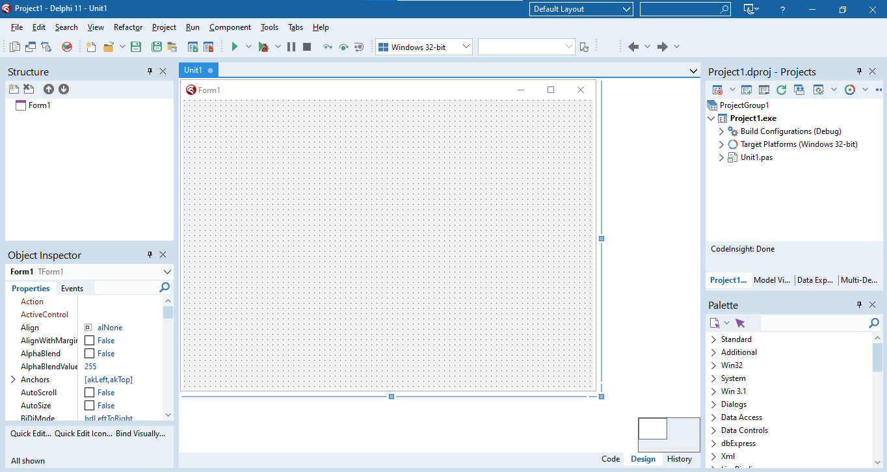
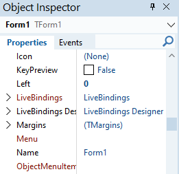
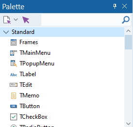
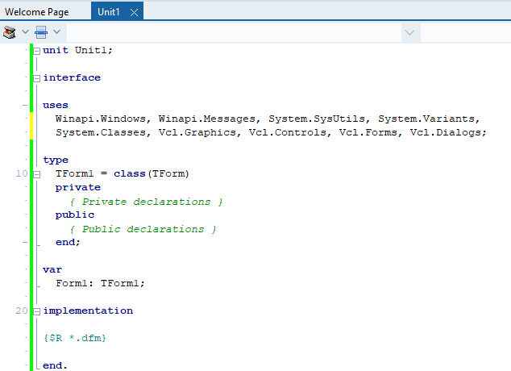

A printable guide to the practical Delphi programming for Grade 10 (Paper 1 skills), with the year planner and exam extras.
Before writing a single line of code, good programmers plan their solution. This page covers algorithms, pseudocode, flowcharts, IPO tables and trace tables — the thinking tools of programming.
Imagine you want to make a cup of tea. You don't just randomly pour hot water and hope for the best — you follow steps: boil water, put teabag in cup, pour water, wait, add milk. That ordered list of steps is an algorithm.
In computing, an algorithm is a precise, step-by-step set of instructions used to solve a problem or complete a task. Every program you write starts as an algorithm in your head (or on paper) before it becomes code.
Think of an algorithm like a recipe. A recipe tells you exactly what ingredients to use, in what order, and what to do with them. A computer program is just a recipe written in a language the computer understands.
| Property | Meaning | Example of failure |
|---|---|---|
| Clear | Every step is unambiguous — only one interpretation | "Do something with the number" — too vague |
| Finite | It must end after a certain number of steps | A loop that never stops |
| Correct | It must produce the right answer every time | Adding instead of multiplying |
| Ordered | Steps must follow a logical sequence | Calculating average before calculating total |
| Efficient | No unnecessary steps or wasted resources | Calculating the same total three times |
Before writing code, planning with an algorithm helps you:
In 1999, NASA's Mars Climate Orbiter crashed because one team used metric units and another used imperial in their calculations. A clear algorithm with defined units would have caught this. The mistake cost $327 million. Accurate algorithms matter.
An IPO table is the first planning tool you use. It forces you to identify three things before writing any code: what data goes in, what happens to it (process), and what comes out.
| Input | Process | Output |
|---|---|---|
| Length, Width | Area = Length × Width Perimeter = 2 × (Length + Width) |
Area, Perimeter of rectangle |
| Mark1, Mark2, Mark3 | Total = Mark1 + Mark2 + Mark3 Average = Total ÷ 3 |
Total marks, Average mark |
| A number (num) | IF num MOD 2 = 0 THEN "Even" ELSE "Odd" | "Even" or "Odd" |
| Temperature in Celsius (C) | F = (C × 9/5) + 32 | Temperature in Fahrenheit (F) |
In exams you may be asked to complete an IPO table. Always write the Process column as a formula or decision — not just "calculate it". Show your working: Area = Length × Width, not just "work out the area".
Once a program has several buttons and several jobs to do, an IPO table stops being enough on its own — it never says which component is responsible for a job, or what has to happen before that component springs into action. A TOE chart closes that gap: for every task the program must carry out, it records the object (component) that will handle it and the event that sets that component's code running.
A cooldrink at the school tuck shop costs R12. A learner types in how many cooldrinks they want, clicks a button to see the total, types in the money they handed over, then clicks a second button to see their change. Breaking that down task by task produces the following TOE chart:
| Task | Object | Event |
|---|---|---|
| Read how many cooldrinks were ordered | sedQty | Exit |
| Work out the total cost | btnTotal | Click |
| Show the total on the receipt | btnTotal, memReceipt | Click, None |
| Read how much money was handed over | btnChange, edtPaid | Click, None |
| Work out the change owed | btnChange | Click |
| Show the change on the receipt | btnChange, memReceipt | Click, None |
Notice that "Show the total on the receipt" lists two objects. Clicking btnTotal is what actually makes the display happen — memReceipt is only there to show the result, and has no event of its own. Whenever an object is just along for the ride like this, write None next to it in the Event column.
Once the chart is finished, coding becomes close to mechanical: open one event handler for every distinct event you listed, and turn that row's task into a line or two of Delphi inside it.
A flowchart shows the steps of an algorithm as a picture using standard symbols connected by arrows. It is easier to spot errors in a diagram than in written text, which is why flowcharts are so useful.
Flowchart example: checking if a colour is blue
This flowchart takes a number as input, checks if it divides evenly by 2, and displays "Even" or "Odd" before ending.
Here one decision sits inside another. First we check the age; only if that is True do we ask the second question about the licence.
Flowchart: nested decisions — check age first; only if True check the licence.
The diamond shape always asks a Yes/No question. The two arrows leaving the diamond are labelled YES and NO. Both paths must eventually reach the END oval.
Pseudocode is fake code written in plain English that describes the logic of a program. It is not real Delphi code — it is for planning only. Anyone who understands programming should be able to read your pseudocode, even if they don't know Delphi.
IF, THEN, ELSE, ENDIF, WHILE, FOR, INPUT, OUTPUT:= or = for assignment (both are accepted)SET total TO 10 // assignment
INPUT age // get data from user
OUTPUT total // show result
SET area TO length * width // calculation
IF age >= 18 THEN
OUTPUT "May vote"
ELSE
OUTPUT "Too young to vote"
ENDIFSTART
INPUT mark1
INPUT mark2
INPUT mark3
SET total TO mark1 + mark2 + mark3
SET average TO total / 3
OUTPUT "Total: ", total
OUTPUT "Average: ", average
ENDSTART
INPUT num
IF num MOD 2 = 0 THEN
OUTPUT num, " is Even"
ELSE
OUTPUT num, " is Odd"
ENDIF
ENDA trace table is used to test an algorithm by hand. You pick a test value, then track every variable as you step through the algorithm line by line. This helps you check whether the algorithm produces the correct output.
| Step | Instruction | num | num MOD 2 | Output |
|---|---|---|---|---|
| 1 | START | — | — | — |
| 2 | INPUT num | 7 | — | — |
| 3 | IF num MOD 2 = 0? | 7 | 1 | — |
| 4 | Condition FALSE → ELSE branch | 7 | 1 | — |
| 5 | OUTPUT "Odd" | 7 | 1 | "Odd" |
| 6 | END | — | — | — |
| Step | Instruction | mark1 | mark2 | mark3 | total | average |
|---|---|---|---|---|---|---|
| 1 | INPUT mark1 | 90 | — | — | — | — |
| 2 | INPUT mark2 | 90 | 70 | — | — | — |
| 3 | INPUT mark3 | 90 | 70 | 80 | — | — |
| 4 | total = mark1+mark2+mark3 | 90 | 70 | 80 | 240 | — |
| 5 | average = total / 3 | 90 | 70 | 80 | 240 | 80 |
| 6 | OUTPUT total, average | — | — | — | 240 | 80 |
When two algorithms solve the same problem, we compare them. Three key criteria matter in CAPS exams:
| Criterion | What it means | Poor example | Better example |
|---|---|---|---|
| Sequence | Steps must be in the correct order | Calculate average BEFORE total | Calculate total first, THEN average |
| Precision | Each step must have one clear meaning | "Calculate the answer" | SET total TO mark1 + mark2 + mark3 |
| Efficiency | No unnecessary steps or repeated work | Calculate total three separate times | Calculate total once and reuse the variable |
The trick: assume the first value is both smallest and largest, then compare the rest one by one.
var
iNum1, iNum2, iNum3: Integer;
iSmallest, iLargest: Integer;
begin
iNum1 := StrToInt(edtNum1.Text);
iNum2 := StrToInt(edtNum2.Text);
iNum3 := StrToInt(edtNum3.Text);
iSmallest := iNum1; // assume first is smallest
iLargest := iNum1; // assume first is largest
if iNum2 < iSmallest then iSmallest := iNum2;
if iNum3 < iSmallest then iSmallest := iNum3;
if iNum2 > iLargest then iLargest := iNum2;
if iNum3 > iLargest then iLargest := iNum3;
lblResult.Caption := 'Smallest: ' + IntToStr(iSmallest)
+ ' Largest: ' + IntToStr(iLargest);
end;You always need a temporary variable to swap values. Without it, one value gets overwritten before it can be saved — like trying to swap two glasses of water without a third empty glass.
var
iA, iB, iTemp: Integer;
begin
iA := StrToInt(edtA.Text);
iB := StrToInt(edtB.Text);
iTemp := iA; // step 1: save A into temp
iA := iB; // step 2: overwrite A with B
iB := iTemp; // step 3: put saved A into B
edtA.Text := IntToStr(iA);
edtB.Text := IntToStr(iB);
end;var
iNum: Integer;
begin
iNum := StrToInt(edtNum.Text);
if iNum MOD 2 = 0 then
lblResult.Caption := 'Even number'
else
lblResult.Caption := 'Odd number';
end;A number is a factor if it divides another with no remainder (MOD = 0). For example, 3 is a factor of 12 because 12 ÷ 3 = 4 with remainder 0.
if iNum2 MOD iNum1 = 0 then
lblResult.Caption := IntToStr(iNum1) + ' is a factor of ' + IntToStr(iNum2)
else
lblResult.Caption := IntToStr(iNum1) + ' is NOT a factor of ' + IntToStr(iNum2);A clear, step-by-step set of instructions to solve a problem is called a(n)…
An algorithm is the logic/steps; a flowchart is just one way to draw an algorithm.
In an IPO table, the P stands for…
IPO = Input → Process → Output: the processing turns input into output.
In a flowchart, which symbol is used for a decision?
A diamond asks a yes/no question; a rectangle is a process and an oval is start/stop.
Delphi is a visual programming environment — you design the screen AND write the code. You drag components onto a form to build the interface, then write Delphi code to make it all work. This page covers the IDE layout, components, naming, events, and your first program.
When you open Delphi, this is what you will see. It might look overwhelming at first — but each area has one clear job:



Press F12 to toggle between the Design View (what you see above) and the Code View (where you type your Delphi code).

An Integrated Development Environment (IDE) is a software application that combines the tools a programmer needs — a code editor, a compiler, and a debugger — into a single interface, so you can design, write, test and run a program without switching between separate tools.
Think of the IDE as your workshop — every tool you need (editor, compiler, debugger) is laid out and ready to use, all in one place.
RAD stands for Rapid Application Development. The label applies to Delphi because most of the visual work is already done for you: instead of writing code to draw a button or a text box pixel by pixel, you drag a ready-made component from the Tool Palette onto the form. Skipping that low-level drawing work is what lets a small classroom project turn into a working app within a single lesson.
| Panel | Purpose |
|---|---|
| Menu Bar | Top menu — File, Edit, View, Project, Run, Tools etc. |
| Tool Palette | All Delphi components grouped by category. Click a component, then click on the form to place it. |
| Object Inspector | Sets the initial properties and events of a selected component. |
| Structure Panel (Object TreeView) | Quick reference showing all objects on the current form, displayed in a hierarchical (tree) view. |
| Form / Design Area | The visual canvas — drag and drop components here to build the UI. |
| Code View | Where you write Delphi code. Toggle with F12. |
Delphi is an Object-Oriented Programming (OOP) language, so almost everything you place on a form is an object. To talk about objects precisely, three related terms are used:
| Term | Meaning |
|---|---|
| Class | The plan or blueprint for an object — for example TButton is the class that defines what every button can look like and do. Class names always start with a capital T. |
| Object | An instance of a class — an actual button, label or form that exists in your program, e.g. btnCalculate is an object (instantiation) of the class TButton. |
| Component | A particular type of object that can be placed on a form to build a user-friendly, interactive interface (e.g. a Button, Label or Edit). |
Before a house is built, an architect draws up plans — the class. Many houses can then be built from the same plan — each one is an object (an instantiation of the class). TButton is the plan; btnCalculate and btnCancel are two different objects built from that same plan.
Every object has:
An assignment statement stores a value in a property or variable using the assignment operator :=. We use code in Delphi to assign values to properties of components in the following format:
Component.Property := Value;All the properties a component has can be seen in the Object Inspector when that component is selected — the same properties you set visually at design time can also be set in code.
:= — never the other way round.;Form1.Height := 500;
Form1.Width := 700;
Button1.Caption := 'Register';
Shape1.Top := 20;
Shape1.Left := 20;Each project must be saved in its own dedicated folder. Save the Unit file as FileName_u.pas and the Project file as FileName_p.dpr. Never mix two projects in one folder.
Delphi creates several files for every program, but you only ever need to save two of them yourself — Delphi regenerates the rest automatically when you run the program.
| File | Extension | Contains | Save it yourself? |
|---|---|---|---|
| Unit file | .pas | The Delphi code you write (event handlers, class definition) | Yes |
| Project file | .dpr | Information that ties the units of a project together | Yes |
| Form file | .dfm | The visual layout of the form and its components | No — saved automatically with the Unit |
If you need to copy a project to another computer, copy the .dpr, .dfm and .pas files — Delphi will recreate every other file the next time you run the program.
Components are the building blocks placed on a form. Each is an object with properties and events. Here is what the most common ones look like:
Every component gets a prefix that indicates its type, followed by a meaningful name. This makes code readable.
| Prefix | Component Type | Example |
|---|---|---|
btn | TButton | btnCalculate |
lbl | TLabel | lblResult |
edt | TEdit | edtName |
mem | TMemo | memOutput |
img | TImage | imgLogo |
pnl | TPanel | pnlHeader |
sed | TSpinEdit | sedNotes |
cbo | TComboBox | cboGrade |
lst | TListBox | lstNames |
rgp | TRadioGroup | rgpGender |
chk | TCheckBox | chkAgree |
tmr | TTimer | tmrClock |
Placing an & in front of a letter in a component's Caption underlines that letter and turns it into a keyboard shortcut. Pressing Alt + that letter clicks the component without using the mouse.
btnRed.Caption := '&Red'; // underlines the R — press Alt+R to click the buttonDelphi programs are event-driven — code only runs when something HAPPENS (an event), like pressing a button, typing in a box, or a timer ticking.
Think of a vending machine. It just sits there doing nothing — until you push a button. That press is the event. The machine then dispenses the item — that is the event handler (your code). If no button is pressed, nothing happens. Delphi works exactly like this.
| Event | When it fires | Common use |
|---|---|---|
OnClick | User clicks a button / component | Calculate, submit, navigate |
OnChange | Text in an edit box changes | Live validation, update display |
OnKeyPress | A key is pressed while component has focus | Accept only numbers |
OnCreate | Form loads / opens | Initialise variables, load data |
OnTimer | Timer interval elapses | Countdown, clock display |
OnClick handler automatically.begin and end.procedure TForm1.btnCalculateClick(Sender: TObject);
begin
// Your code goes here
ShowMessage('Button clicked!');
end;ShowMessage displays a pop-up with a message. InputBox pops up a window asking the user to type something. Both are modal — the program pauses until the user responds.
ShowMessage('Hello world!');
ShowMessage('Result: ' + IntToStr(iAnswer));// Returns a string
sName := InputBox('Name', 'Enter your name:', '');
// Convert to integer
iNum := StrToInt(InputBox('Number', 'Enter a number:', ''));
// Convert to real
rAmount := StrToFloat(InputBox('Amount', 'Enter amount:', ''));
// Get first character only
cClass := InputBox('Class', 'Enter class:', '')[1];Properties control how a component looks and behaves. Set them in the Object Inspector or through code.
| Property | Description | Example Value |
|---|---|---|
Name | Unique identifier used in code | btnCalculate |
Caption | Text shown on labels, buttons, forms | 'Calculate' |
Text | Text in a TEdit box | edtName.Text |
Height | Component height in pixels | 30 |
Width | Component width in pixels | 150 |
Font.Size | Text size | 14 |
Font.Color | Text colour (note: Color not Colour) | clRed |
Visible | Whether component is shown | True / False |
The same Component.Property := Value; format works for every property, including nested ones like Font.Color:
Label1.Font.Color := clGreen;
Shape1.Brush.Color := clRed;Methods are pre-written operations that perform tasks on components. Format: ComponentName.Method;
| Method | Effect |
|---|---|
Button1.Hide; | Makes the button invisible |
Button1.Show; | Makes the button visible again |
Edit1.SetFocus; | Moves the cursor into the edit box |
Memo1.Clear; | Clears all text in the memo |
Form1.Close; | Closes the form / program |
RichEdit1.Lines.Add('text'); | Adds a new line to a RichEdit or Memo |
Forgetting the closing semicolon ; on a statement causes a syntax error. There is never a semicolon before else. Begin/end pairs must always match.
In Delphi, the window you design your program’s interface on is called the…
You drop components onto the Form; the Object Inspector sets their properties.
Which property holds the text shown on a button?
A TButton’s visible label is its Caption; Name is the identifier you use in code.
Code that must run when a button is clicked is placed in its…
Double-clicking a button creates its OnClick event handler.
Beyond buttons and labels — these components are used in most IT practical exams. Know each one's key property and how to use it in code.
| Component | Key Property/Event | How to use in code |
|---|---|---|
| TEdit | .Text | edtName.Text — read or write as string |
| TSpinEdit (sedNum) | .Value | sedNum.Value — returns Integer directly |
| TComboBox | .Text or .ItemIndex | cboMonth.Text or cboMonth.ItemIndex (0-based) |
| TListBox | .ItemIndex, .Items | lstNames.Items.Add('Alice'); lstNames.ItemIndex |
| TRadioGroup | .ItemIndex | if rgpGender.ItemIndex = 0 then (0 = first item) |
| TCheckBox | .Checked | if chkAgree.Checked then |
| TTrackBar | .Position | trkVolume.Position — Integer |
| TDateTimePicker | .Date | dtpBirth.Date — TDateTime value |
| Component | Key Property | Code example |
|---|---|---|
| TLabel | .Caption | lblResult.Caption := 'Done'; |
| TMemo | .Lines | memOut.Lines.Add('Hello'); |
| TRichEdit | .Lines | Same as Memo; supports formatting |
| TListBox | .Items | lstOut.Items.Add('Alice'); |
| TImage | .Picture | imgPhoto.Picture.LoadFromFile('face.jpg'); |
| TProgressBar | .Position | pbrLoad.Position := 75; |
| TPanel | .Caption, .Color | pnlInfo.Caption := 'Ready'; |
A TBitBtn is a special type of button that can show a caption and a small picture (bitmap) on its face, making an interface look more professional. Its most useful property is Kind — setting it gives the button pre-programmed behaviour, so some Bitmap Buttons need no code at all.
| Kind value | Built-in behaviour |
|---|---|
bkClose | Closes the form/program — fully pre-programmed |
bkOK | Closes a modal form and returns mrOk |
bkCancel | Closes a modal form and returns mrCancel |
bkYes / bkNo | Closes a modal form, returning mrYes / mrNo |
bkHelp | Triggers context help — the programmer adds the code |
Bitmap Buttons use the prefix bmb, e.g. bmbClose.
// At design time: use Items property in Object Inspector
// At runtime:
cboMonth.Items.Add('January');
cboMonth.Items.Add('February');
cboMonth.ItemIndex := 0; // select first item
// Reading selected item
sSelected := cboMonth.Text;
iIndex := cboMonth.ItemIndex;lstNames.Items.Add('Alice'); // add item
lstNames.Items.Clear; // remove all
lstNames.Items.Delete(0); // remove first item
iCount := lstNames.Items.Count; // number of items
sItem := lstNames.Items[2]; // access item at index 2
sSelected := lstNames.Items[lstNames.ItemIndex]; // selected item-1 TrickThe ItemIndex property tells you which item is selected, counting from 0 (the first item). When nothing is selected, ItemIndex is -1.
This works in reverse too: setting ItemIndex := -1 deselects everything and visually clears the box. This is the standard way to reset a TComboBox, TListBox or TRadioGroup — for example when a user clicks a "Clear form" button.
cboMonth.ItemIndex := -1; // ComboBox: no month selected (box appears empty)
rgpGender.ItemIndex := -1; // RadioGroup: no radio button filled in
lstNames.ItemIndex := -1; // ListBox: nothing highlightedIf the user has not chosen anything, ItemIndex is -1. Reading cboMonth.Items[cboMonth.ItemIndex] while it is -1 causes a runtime error (list index out of bounds). Guard it first:
if cboMonth.ItemIndex = -1 then
ShowMessage('Please select a month first.')
else
sMonth := cboMonth.Text;| Prefix | Component |
|---|---|
btn | TButton |
lbl | TLabel |
edt | TEdit |
mem | TMemo |
sed | TSpinEdit |
cbo | TComboBox |
lst | TListBox |
rgp | TRadioGroup |
chk | TCheckBox |
pgc | TPageControl |
tmr | TTimer |
img | TImage |
A TTimer fires its OnTimer event at regular intervals without user input.
| Property | Meaning |
|---|---|
Interval | Milliseconds between triggers (1000 = 1 second) |
Enabled | True/False — starts or stops the timer |
var
iSeconds: Integer; // global variable
// OnTimer event (fires every 1000ms)
procedure TForm1.tmrCountTimer(Sender: TObject);
begin
Dec(iSeconds);
lblTime.Caption := IntToStr(iSeconds) + ' seconds left';
if iSeconds <= 0 then
begin
tmrCount.Enabled := False;
ShowMessage('Time is up!');
end;
end;A TPageControl creates tabbed pages on a form. Each tab is a TTabSheet.
TPageControl to the formTTabSheet.Caption in the Object Inspector// Show a tab
TabSheet2.TabVisible := True;
// Hide a tab
TabSheet2.TabVisible := False;
// Jump to a specific tab
pgcMain.ActivePage := TabSheet3;Which component lets the user pick one option from a drop-down list?
A ComboBox shows a drop-down; a Memo is for multiple lines of free text.
Which property gives the position of the selected item in a ListBox/ComboBox?
ItemIndex is the 0-based position of the chosen item (−1 means nothing selected).
A component that lets the user raise/lower a number with up–down arrows is a…
A SpinEdit edits a whole number with arrow buttons; a Label only displays text.
Every value in Delphi has a data type. Variables are the containers that hold these values while your program runs. Constants hold values that never change.
| Data Type | What it stores | Examples | Quotes? |
|---|---|---|---|
Integer | Whole numbers (positive & negative, no decimals) | 3, -15, 1250 | No |
Int64 | Very large whole numbers (see below) | 3000000000 | No |
Real | Numbers with decimals (floating point) | 3.14, -13.24, 125.89 | No |
String | One or more characters — text | 'Banana', '23.45', '@!jkl' | Single quotes '…' |
Char | A single character only | 'S', '!', 'a' | Single quotes '…' |
Boolean | Only True or False | True, False | No |
Delphi lets you go one way but not the other: a whole-number result can be poured into a Real variable without any fuss, but a Real value can never be poured into an Integer variable — there is no automatic way to throw away a decimal part. Worth remembering too: the / operator always hands back a Real answer, even when both of the numbers you divide happen to be whole numbers.
rTotalStock := iBoxesIn + iBoxesReturned; // fine — a whole number fits happily into a Real
iBoxesIn := rTotalStock * 2; // rejected — a Real value won't fit into an IntegerAn Integer can only hold whole numbers from about -2.1 billion to +2.1 billion (exactly -2 147 483 648 to 2 147 483 647). Go past that and the value overflows and gives a wrong answer, or crashes the program. For bigger whole numbers use Int64, which holds values up to about 9.2 × 1018.
A good example is money counted in cents: a municipal budget of R30 million is 3 000 000 000 cents, which is too big for an Integer. Another is a factorial: 13! is already 6 227 020 800, and Int64 can hold factorials up to 20!.
var
iBudgetCents : Int64; // Integer would overflow here
iProjectCents : Integer;
begin
iBudgetCents := 3000000000;
iProjectCents := 950000000;
iBudgetCents := iBudgetCents - iProjectCents; // a smaller whole number fits into an Int64 happily
end;Use Integer for everyday counting (ages, marks, quantities). Reach for Int64 only when a total or a product could realistically pass 2 billion. Use Real instead when the value needs decimals — Int64 still holds whole numbers only.
A variable is a named storage location that holds a value during program execution. Think of it as a labelled cup — it holds one thing at a time, but you can empty it and refill it whenever you like.
Variables must be: Declared → Populated → Used.
A variable holds one value at a time, but the value can change. Your cup might hold coffee now, tea after break and hot chocolate tonight — same cup, different contents. In the same way iScore could be 5 now and 12 later.
The data type is the kind of container, and it decides what may go inside — just as a cup is made for liquids and a plate is made for food. Each type is its own kind of container:
Integer — holds whole numbers, e.g. 3, 15, −7Real — holds numbers with decimals, e.g. 3.14String — holds text, e.g. 'Banana'Boolean — holds only True or FalseAnd just as you would not serve soup on a plate, you cannot store the word 'Banana' in an Integer — the value has to match the type of container.
Delphi won't accept just any piece of text as a variable name — a handful of rules apply every time you choose one:
_ — never a digit or another symbolbegin, var or end already have a fixed meaning to the compilerWhen a single word isn't descriptive enough, run several together and capitalise each new one instead of using spaces or an unbroken run of lowercase letters — sFirstName and rTotalCost read far more clearly than sfirstname or rtotalcost.
| Prefix | Data Type | Example |
|---|---|---|
i | Integer | iAge |
r | Real | rPrice |
s | String | sName |
c | Char | cGrade |
b | Boolean | bFound |
Declaring a variable means creating a named container that we can populate later, in the var section, using the format: variableName : DataType;
procedure TForm1.btnClickClick(Sender: TObject);
var
sName: string;
iNumber: integer;
begin
// code here
end;var
Form1: TForm1;
sName: string; // declared here, below existing var block
iNumber: integer;Use the assignment operator := to put a value into a variable that has already been declared.
sName := 'Jannie';
sName := edtName.Text; // from a text box
iNumber := 15;
iNumber := sedNum.Value; // from a spin edit
bFlag := True;The := operator always works right → left: it takes the value on the right and stores it in the variable on the left.
Think of pouring coffee. You put the coffee (the value) into the cup (the variable) — you would never put the cup into the coffee! So the container always goes on the left.
In sName := 'Jannie'; the coffee is 'Jannie' (on the right) and the cup is sName (on the left). Read it backwards: "take 'Jannie' and pour it into sName".
It works the same with a calculation: iTotal := iPrice * iQty; — work out the answer (the coffee) on the right first, then pour it into iTotal (the cup) on the left. This is also why 5 := iAge; is impossible — you cannot pour a variable into a plain number.
Set a starting value before using a variable, especially counters and totals — otherwise Delphi may assign a random garbage value.
i := 0;
iTotal := 0;
sReverse := '';
cLetter := '';lblFullName.Caption := sName + ' ' + sSurname;
memOut.Lines.Add(sName + ' ' + sSurname);
iAnswer := iNum1 + iNum2;
memOut.Lines.Add(IntToStr(iNum1) + ' + ' + IntToStr(iNum2)
+ ' = ' + IntToStr(iAnswer));Two ASCII character codes are handy for laying out text: #13 forces whatever follows onto a new line (it is the code for a carriage return), and #9 inserts a tab space. Join either one into a string with +, exactly like any other piece of text:
lblResult.Caption := 'Test 1: 78%' + #13 + 'Test 2: 84%';
memOut.Lines.Add('Player' + #9 + 'Score');Instead of writing out a full assignment every time a counter needs to move up or down by one, Delphi gives you two ready-made procedures: Inc and Dec. Call one with just the variable name and it steps by one; give it a second number and it steps by that amount instead.
| Statement | Equivalent to |
|---|---|
Inc(iVisitors); | iVisitors := iVisitors + 1; |
Inc(iVisitors, 5); | iVisitors := iVisitors + 5; |
Dec(iStock); | iStock := iStock - 1; |
Dec(iStock, 5); | iStock := iStock - 5; |
You'll reach for Inc most often inside a loop, nudging a counter forward one step per repetition — Inc(iCount); reads more naturally than repeating the full assignment statement every time.
Not every value needs its own Edit box sitting on the form. The InputBox function opens a small dialog of its own, waits for the user to type something, and hands back whatever they entered — always packaged as a string, no matter what kind of data it looks like.
sTeam := InputBox('House Team', 'Which house are you in?', '');Since the result is always text, wrap it in a conversion function whenever you actually need a number or a single character:
| Required type | Example |
|---|---|
string | sTeam := InputBox('House Team', 'Which house are you in?', ''); |
integer | iAge := StrToInt(InputBox('Age', 'How old are you?', '')); |
real | rHeight := StrToFloat(InputBox('Height', 'What is your height in metres?', '')); |
char | cGrade := InputBox('Grade', 'Enter your grade symbol:', '')[1]; — the [1] keeps only the first character typed |
A constant holds a value that is known before the program runs and cannot change while it runs. Use const instead of var. No data type is needed, and use = not :=.
const
VAT = 0.15;
MAX_ITEMS = 100;
// Using a constant — exactly like a variable
rVatAmount := rCostPrice * VAT;
rTotal := rCostPrice + rVatAmount;An ordinal type is a type whose values can be listed in a fixed order, one after the other, so that every value has a definite next and previous value. Ordinal types are the only ones allowed for a for loop counter, for the selector of a case statement, and for Inc, Dec and Ord.
| Ordinal | Not ordinal |
|---|---|
Integer (and Int64) — after 7 comes 8 | Real — there are endless values between 2.5 and 2.6, so no value has a "next" one |
Char — after 'C' comes 'D' | String — text of any length has no single position in a list |
Boolean — False then True | |
| Enumerated and subrange types (below) |
This is why you can write for cLetter := 'A' to 'Z' do or Inc(iCount), but you cannot write for rValue := 1.0 to 2.0 do or use a string as the selector of a case statement.
An enumerated type is a type you define by listing every value it may have, in words. A variable of that type can hold only one of the listed names, which makes your code easier to read than using codes like 1, 2 and 3. The list goes in a type section, near the top of the unit above the form class; the variable is then declared as normal.
type
TPayStatus = (Unpaid, Deposit, PaidInFull); // the only three values allowed
procedure TForm1.btnCheckClick(Sender: TObject);
var
ePay : TPayStatus;
begin
ePay := Deposit;
case ePay of
Unpaid : lblNote.Caption := 'Please pay the fees';
Deposit : lblNote.Caption := 'Balance still outstanding';
PaidInFull : lblNote.Caption := 'Thank you';
end;
memOut.Lines.Add(IntToStr(Ord(ePay))); // shows 1, the position in the list
end;The values are numbered from 0 in the order you list them (Unpaid = 0, Deposit = 1, PaidInFull = 2), and Ord gives you that number. You can compare them, too: ePay < PaidInFull is True for both Unpaid and Deposit.
You cannot assign 'Deposit' (in quotes) to an enumerated variable, and you cannot pass one straight into ShowMessage or IntToStr. Use a case statement to turn each value into the text you want to display, or Ord to get its number.
A subrange type restricts an ordinal type to a stretch of its values. Write the lowest and highest value with two dots between them. It documents what values are legal, and lets Delphi catch mistakes — for instance a constant outside the range is rejected when you compile.
type
TMark = 0..100; // whole numbers 0 to 100 only
TLetter = 'A'..'E'; // only the characters A to E
var
iMark : TMark;
cSymbol : TLetter;
begin
iMark := 76; // fine
cSymbol := 'C'; // fine
iMark := 120; // rejected: 120 is outside 0..100
end;Use an enumerated type when you have a small set of named choices (payment status, ticket type). Use a subrange when the values are ordinary numbers or letters but only part of the range makes sense (a mark, a month number 1..12). Neither replaces input validation: a value typed by the user still needs checking before it is stored.
Components like TEdit only hold strings. You must convert to the right type before using in calculations.
| Function | Converts | Example |
|---|---|---|
StrToInt() | String → Integer | iAge := StrToInt(edtAge.Text); |
StrToFloat() | String → Real | rPrice := StrToFloat(edtPrice.Text); |
IntToStr() | Integer → String | lblOut.Caption := IntToStr(iTotal); |
FloatToStr() | Real → String | lblOut.Caption := FloatToStr(rAverage); |
Val procedure — converting safelyStrToInt crashes (runtime error) if the text isn't a valid number. The Val procedure converts a string to a number without crashing: it gives back the converted value AND an error code that tells you whether the conversion worked (0 = success, otherwise the position of the first bad character).
var
iValue, iCode : Integer;
begin
Val(edtAge.Text, iValue, iCode);
if iCode = 0 then
ShowMessage('Valid number: ' + IntToStr(iValue))
else
ShowMessage('Not a valid number!'); // iCode = position of the bad character
end;IntToStr and FloatToStr are functions: they hand the text back to you. Str does the same job as a procedure: you give it a number and a string variable, and it places the text in that variable. It can also format the number in the same step by writing value:width:decimals.
var
sCount, sPrice : string;
rPrice : real;
begin
rPrice := 24.5;
Str(42, sCount); // sCount = '42'
Str(rPrice:0:2, sPrice); // sPrice = '24.50'
lblOut.Caption := 'Price: R' + sPrice;
end;Write the real value as rPrice:0:2 — the 0 means "use as much space as needed" and the 2 is the number of decimal places. Without the formatting part, a Real comes out in long scientific notation that is no use on a form.
// FloatToStrF(value, format, totalDigits, decimals)
lblPrice.Caption := FloatToStrF(rPrice, ffCurrency, 4, 2); // → R24.50
lblPrice.Caption := FloatToStrF(rPrice, ffFixed, 4, 2); // → 24.50| Format | Description |
|---|---|
ffCurrency | Adds a currency symbol to the formatted value |
ffExponent | Writes the value out in scientific notation |
ffFixed | Rounds the value to however many decimal places you ask for |
ffGeneral | Plain number formatting — decimals are shown only when the value actually has them |
ffNumber | Works like ffFixed, but breaks large numbers up with thousands separators |
| Error Type | When it occurs | Example |
|---|---|---|
| Syntax Error | Code is typed incorrectly — won't compile | Missing semicolon, missing end |
| Runtime Error | Crashes while the program is running | Dividing by zero |
| Logical Error | Runs, but gives wrong answer | Calculating average before total, infinite loop |
Only a syntax error stops the program from compiling at all — Delphi catches it immediately. Runtime and logical errors both let the program compile and run, which makes them harder to catch: a runtime error only shows itself when the exact conditions that break it occur (e.g. the user finally types a letter instead of a number), and a logical error may never show itself at all — the program keeps running and simply produces the wrong answer.
| Common causes of runtime errors | Common causes of logical errors |
|---|---|
Converting text that isn't a valid number (StrToInt/StrToFloat) | Using the wrong variable in a calculation (e.g. a property was never transferred into it) |
| Dividing by zero | Getting the sequence of instructions wrong (e.g. calculating a total before all the values were added) |
| Calculating the square root of a negative number | Using AND/OR/NOT incorrectly in a compound condition |
| A calculated answer too big for its variable type (overflow) | Ignoring the order of precedence of operators |
| Accessing an array index that is out of range | A mistake with the variable controlling a loop, causing it to run forever |
Many runtime and logical errors trace back to invalid data: Garbage In, Garbage Out. A program is only as reliable as the checks it makes on the data it receives — see Input Validation on the Decision Making page.
A try..except block protects against any runtime error, not just a bad conversion. Code that might fail — a conversion, a calculation, anything risky — goes inside the try section. The moment something in there raises an error, Delphi abandons whatever was left in that section and jumps straight to except, running the recovery code written there instead of letting the program crash.
try
// risky code that might raise a runtime error
except
// code that runs only if an error occurred above
end;var
rAmount : real;
begin
try
rAmount := StrToFloat(edtAmount.Text);
except
ShowMessage('Invalid amount entered');
end;
end;The Val procedure above and a try..except block solve the same problem in different ways. Val checks a conversion specifically and gives you an error code to test. try..except is more general — it protects any block of code (a conversion, a calculation, a file operation) and reacts only if something actually goes wrong.
Logical errors are the hardest to find because the program runs without crashing. Besides tracing the code by hand with a paper-based trace table, Delphi's built-in debugger lets you watch a program execute one line at a time and see exactly what is happening inside it.
| Tool | What it does |
|---|---|
| Breakpoint | Click in the grey margin next to a line of code to mark where execution must pause. When the program reaches that line, Delphi stops and lets you take control instead of running straight through. |
| Step (F8) | Executes only the highlighted line, then pauses again on the next one — lets you watch the program run one instruction at a time. |
| Watch List (Run → Add Watch) | Displays the current value of one or more variables, updated live as each line executes — so you can see exactly where a variable gets the wrong value. |
It is tempting to change lines of code at random when the output looks wrong, hoping something sticks. That approach wastes time and can introduce new bugs on top of the original one. Watching the variables change value one line at a time pinpoints the exact instruction responsible, so the fix is targeted instead of accidental.
Which data type stores whole numbers?
Integer stores whole numbers. Real stores decimals; String stores text.
In sName := 'Jannie'; the value 'Jannie' goes:
Assignment works right-to-left: the value on the right is stored in the variable (the "cup") on the left.
Which function converts the text in an Edit box to an integer?
StrToInt converts a string to an integer. IntToStr does the opposite.
Operators perform calculations. Delphi also has a rich library of built-in functions for maths, string handling, and more.
| Operator | Symbol | Description | Example | Result |
|---|---|---|---|---|
| Addition | + | Add values | 5 + 3 | 8 |
| Subtraction | - | Subtract | 10 - 4 | 6 |
| Multiplication | * | Multiply | 4 * 3 | 12 |
| Division | / | Divide (returns Real) | 7 / 2 | 3.5 |
| Integer Division | DIV | Whole part only (no remainder) | 7 DIV 2 | 3 |
| Modulus | MOD | Remainder only | 7 MOD 2 | 1 |
| Calculation | Working | MOD result | DIV result |
|---|---|---|---|
5 MOD/DIV 2 | 5 ÷ 2 = 2 remainder 1 | 1 | 2 |
25 MOD/DIV 5 | 25 ÷ 5 = 5 remainder 0 | 0 | 5 |
17 MOD/DIV 3 | 17 ÷ 3 = 5 remainder 2 | 2 | 5 |
Even/Odd check: n MOD 2 = 0 → even
Factor check: b MOD a = 0 → a is a factor of b
Last digit: n MOD 10 → last digit of n
A favourite exam task: pull a number apart digit by digit. The trick is the pair MOD 10 (gives the last digit) and DIV 10 (chops the last digit off). Repeat in a loop until nothing is left. Here we add up the digits, e.g. 1234 → 1+2+3+4 = 10.
var
iNum, iDigit, iSum : Integer;
begin
iNum := StrToInt(edtNum.Text); // e.g. 1234
iSum := 0;
while iNum > 0 do
begin
iDigit := iNum mod 10; // MOD 10 grabs the LAST digit (1234 -> 4)
iSum := iSum + iDigit;
iNum := iNum div 10; // DIV 10 chops it off (1234 -> 123)
end;
lblSum.Caption := 'Digit sum: ' + IntToStr(iSum);
end;The MOD 10 / DIV 10 loop is the key to counting digits, reversing a number, checking for a palindrome, or building the Luhn check digit of an ID. Swap what you do with iDigit and you have solved a whole family of questions.
Whenever items must be packed into groups of a fixed size, DIV and MOD work as a pair. DIV counts how many complete groups you can fill; MOD tells you how many items are left over once those groups are full.
Imagine the tuck shop has baked 134 cupcakes for a fundraiser and each box holds 12.
| Question | Calculation | Answer |
|---|---|---|
| How many full boxes? | 134 DIV 12 | 11 (11 × 12 = 132) |
| How many cupcakes are left over? | 134 MOD 12 | 2 (134 − 132) |
| Check | 11 * 12 + 2 | 134 — we got every cupcake back |
const
BOX_SIZE = 12;
var
iCakes, iFullBoxes, iLeftover : Integer;
begin
iCakes := StrToInt(edtCakes.Text); // e.g. 134
iFullBoxes := iCakes div BOX_SIZE; // 11 complete boxes
iLeftover := iCakes mod BOX_SIZE; // 2 cupcakes that do not fill a box
memOut.Lines.Add('Full boxes: ' + IntToStr(iFullBoxes));
memOut.Lines.Add('Left over: ' + IntToStr(iLeftover));
end;The same pair converts a total into bigger and smaller units. A movie marathon of 435 minutes is 435 DIV 60 = 7 hours and 435 MOD 60 = 15 minutes — 7 h 15 min.
The 2 leftover cupcakes still need somewhere to go, so the shop needs 12 boxes in total, not 11. You can get this by adding one extra box whenever the leftover is more than zero, or by rounding a real division up with Ceil (see Real Division with Floor and Ceil further down). Decide first whether the question wants complete groups or all items packed.
| Priority | Operators |
|---|---|
| 1st (highest) | Brackets ( ) |
| 2nd | * / DIV MOD (left to right) |
| 3rd (lowest) | + - (left to right) |
result := 2 + 3 * 4; // = 14 (3*4 first)
result := (2 + 3) * 4; // = 20 (brackets first)
result := 10 DIV 2 + 3; // = 8 (DIV first)Percentages are just divisions by 100, so they are easy to calculate once you know which value goes where. Always store the amounts in Real variables, because money and percentages seldom come out as whole numbers.
A discount is worked out like VAT, except that you subtract it instead of adding it. A school jersey costs R450 and is on sale at 12% off:
const
DISCOUNT_RATE = 12; // percent
var
rPrice, rDiscount, rFinal : Real;
begin
rPrice := 450;
rDiscount := rPrice * DISCOUNT_RATE / 100; // 450 * 12 / 100 = 54
rFinal := rPrice - rDiscount; // 450 - 54 = 396
lblFinal.Caption := FloatToStrF(rFinal, ffCurrency, 8, 2);
end;A shortcut that gives the same answer: the customer pays (100 - 12) percent of the price, so rFinal := rPrice * (100 - DISCOUNT_RATE) / 100;.
How much did something go up or down, compared with where it started? Subtract the old value from the new value, divide by the old value, and multiply by 100:
percentage change = (new − old) ÷ old × 100
A positive answer means an increase; a negative answer means a decrease.
| Situation | Old | New | Working | Change |
|---|---|---|---|---|
| Taxi fare goes up | R18 | R21 | (21 − 18) / 18 × 100 | +16.67% (increase) |
| Sports bag on sale | R650 | R520 | (520 − 650) / 650 × 100 | -20% (decrease) |
var
rOld, rNew, rChange : Real;
begin
rOld := StrToFloat(edtOld.Text); // e.g. 650
rNew := StrToFloat(edtNew.Text); // e.g. 520
rChange := (rNew - rOld) / rOld * 100; // -20
lblChange.Caption := FloatToStrF(rChange, ffFixed, 8, 1) + '%';
end;The comparison always starts from where you began, so the old value is the denominator. Dividing by the new value gives the wrong answer. Also remember the brackets around (rNew - rOld) — without them, precedence would divide first. And if the old value could be 0, check for that before dividing.
Add Math to your uses section to access power, floor, ceil etc.
| Function | Description | Example | Result |
|---|---|---|---|
sqr(x) | x squared (x²) | sqr(4) | 16 |
sqrt(x) | Square root | sqrt(16) | 4.0 |
power(x,n) | x to the power of n | power(5,3) | 125 |
round(x) | Round to nearest integer (an exact .5 goes to the even neighbour — see below) | round(5.68) | 6 |
trunc(x) | Remove decimal (truncate) | trunc(5.68) | 5 |
floor(x) | Round DOWN | floor(3.76) | 3 |
ceil(x) | Round UP | ceil(3.76) | 4 |
abs(x) | Absolute value (remove negative) | abs(-12) | 12 |
frac(x) | Fractional part only | frac(12.75) | 0.75 |
pi | Value of π | pi | 3.14159… |
random(n) | Random number from 0 to n-1 | random(10) | 0–9 |
RoundTo(x,-n) | Round to n decimal places | RoundTo(12.3456,-2) | 12.35 |
All four turn a real number into a whole number, but they do it differently. Floor and Ceil need the Math unit; Round and Trunc do not.
| Value | Round | Trunc | Floor | Ceil |
|---|---|---|---|---|
2.7 | 3 | 2 | 2 | 3 |
2.5 | 2 | 2 | 2 | 3 |
3.5 | 4 | 3 | 3 | 4 |
-2.7 | -3 | -2 | -3 | -2 |
Floor always goes down towards the smaller whole number, and Ceil always goes up. For negative numbers that means they point in opposite directions to what many learners expect: Floor(-2.7) is -3.Trunc simply chops off the decimals, so it moves towards zero. For positive numbers it matches Floor; for negative numbers it matches Ceil.Round finds the nearest whole number. When the value is exactly halfway (.5), Delphi rounds to the even neighbour, so Round(2.5) is 2 but Round(3.5) is 4.The rounding you learnt in primary school (always round .5 up) is not what Round does. Delphi uses "ties go to the even number", so Round(4.5) is 4 and Round(5.5) is 6. If you need a particular direction, use Floor or Ceil instead of Round.
Many counting questions follow the same pattern: use / (real division, so the decimals are kept), then decide which way to round the answer.
| Round with… | Use when… | Typical wording |
|---|---|---|
Floor | You may not exceed a limit, so a partly affordable item does not count. | "How many can I afford / fit / buy?" |
Ceil | You must cover everything, even if the last container is only partly used. | "How many are needed / required?" |
var
rBudget, rPieCost : Real;
iPies : Integer;
begin
rBudget := 500;
rPieCost := 18.50;
iPies := Floor(rBudget / rPieCost); // 500 / 18.50 = 27.027... -> 27
end;27 pies cost R499.50, which fits. A 28th pie would push the total to R518, which is over budget — so the partly affordable pie is thrown away.
var
iLearners, iSeats, iTaxis : Integer;
begin
iLearners := 62;
iSeats := 15;
iTaxis := Ceil(iLearners / iSeats); // 62 / 15 = 4.133... -> 5
end;Four taxis carry only 60 learners, so a fifth is needed for the last two. Every learner must get a seat, so we round up.
Rounding to the nearest whole number can go the wrong way: Round(4.133) is 4 taxis and two learners are left standing, and Round(27.6) would be 28 pies and an overspent budget. Pick Floor or Ceil based on the situation, not on how close the decimal is. For whole numbers that are not negative, a DIV b gives the same answer as Floor(a / b).
| Procedure | Effect | Example | Result |
|---|---|---|---|
Inc(x) | Increment by 1 | Inc(5) | 6 |
Inc(x, n) | Increment by n | Inc(5, 3) | 8 |
Dec(x) | Decrement by 1 | Dec(5) | 4 |
Dec(x, n) | Decrement by n | Dec(6, 4) | 2 |
| Function | Description | Example | Result |
|---|---|---|---|
UpCase(c) | Convert single char to uppercase | UpCase('a') | 'A' |
Trim(s) | Remove spaces from both ends | Trim(' Hello ') | 'Hello' |
TrimLeft(s) | Remove leading spaces | TrimLeft(' Hi') | 'Hi' |
TrimRight(s) | Remove trailing spaces | TrimRight('Hi ') | 'Hi' |
Ord and Chr convert between characters and their ASCII numeric codes.
| Function | Description | Example | Result |
|---|---|---|---|
Ord(c) | Character → ASCII integer | Ord('A') | 65 |
Chr(n) | ASCII integer → Character | Chr(65) | 'A' |
var
sInput, sOutput: string;
i, iShift: Integer;
begin
sInput := InputBox('Text', 'Enter text:', 'ABC');
iShift := StrToInt(InputBox('Shift', 'Enter shift (1-25):', '3'));
sOutput := '';
for i := 1 to Length(sInput) do
// wrap back to 'A' after 'Z' using MOD 26
sOutput := sOutput + Chr(Ord('A') + (Ord(sInput[i]) - Ord('A') + iShift) mod 26);
ShowMessage('Shifted: ' + sOutput); // ABC → DEF, XYZ → ABC
end;Without it, shifting a letter near the end of the alphabet (like 'X', 'Y' or 'Z') pushes past 'Z' into punctuation characters instead of wrapping back to 'A'. Subtracting Ord('A') first converts the letter to a 0–25 range, MOD 26 wraps it, and adding Ord('A') back converts it to a real letter again.
What is the result of 17 MOD 5?
MOD gives the remainder: 17 = 3×5 + 2, so 17 MOD 5 = 2.
What is the result of 17 DIV 5?
DIV gives the whole-number quotient: 17 DIV 5 = 3 (the .4 is discarded).
To test whether an integer n is even, you check…
An even number divides by 2 with no remainder, so n MOD 2 = 0.
Decision structures let your program choose different paths based on conditions. Delphi uses if…then…else and case for this.
Decision-making (also called conditional logic) is when a program tests whether something is true or false and then chooses what to do next based on the answer. A condition is any question that can only be answered with true or false — for example, "is the age 18 or more?".
Everyday analogy: A robot (traffic light) at an intersection makes a decision for you. If the light is green you go; else you stop. Your program does the same thing — it looks at a condition and takes one path or another.
Without decisions, a program could only ever do the exact same thing every single time it runs. Decisions make a program react to its data and its user.
The IF statement evaluates a condition that must resolve to True or False, and executes a statement only when that condition is True.
In plain words it says: "If this is true, then do that; otherwise (else) do something else." Everyday analogy: "If it is raining, take an umbrella, else wear a cap." The "if it is raining" part is the condition that is checked first.
if condition then
statement;Never put a ; on the line before else — it ends the if statement too early.
if condition then
statement
else
statement;if iAge >= 18 then
begin
lblResult.Caption := 'Adult';
btnVote.Enabled := True;
end
else
begin
lblResult.Caption := 'Minor';
btnVote.Enabled := False;
end;if iNum1 > iNum2 then
ShowMessage(IntToStr(iNum1) + ' is larger');
if iAge >= 18 then
ShowMessage('Old enough to vote');
if sUsername <> 'admin' then
ShowMessage('Access denied')
else
ShowMessage('Welcome, administrator!');| Operator | Meaning | Example |
|---|---|---|
= | Equal to | iAge = 18 |
<> | Not equal to | sName <> 'Admin' |
> | Greater than | iScore > 50 |
< | Less than | iAge < 18 |
>= | Greater than or equal to | iMark >= 30 |
<= | Less than or equal to | rPrice <= 100.0 |
An IF inside another IF.
if iAge >= 18 then
begin
if bHasLicense = True then
bDrive := True
else
bDrive := False;
end
else
bDrive := False;Combine multiple conditions in one statement.
Boolean operators let you ask more than one question at the same time. Everyday analogy: to get into a club you might need to be 18 AND have an ID — both must be true. To qualify for a discount you might need to be a student OR a pensioner — either one is enough. NOT simply flips an answer around, like saying "if it is not a holiday, school is open".
| Operator | Rule | Example |
|---|---|---|
AND | Both conditions must be true | (iAge >= 18) AND (bHasID = True) |
OR | At least one condition must be true | (sGender = 'M') OR (sGender = 'F') |
NOT | Inverts the condition | NOT (iScore > 50) |
if (iAge >= 18) AND (bHasLicense = True) then
bCanDrive := True;
if (iScore >= 30) OR (bHasSymbol = True) then
lblResult.Caption := 'Passed';When a condition mixes AND and OR without brackets, Delphi does not test them strictly left-to-right — NOT is applied first, then AND, and only then OR. This is the same idea as multiplication happening before addition in a maths expression. Two learners could type the exact same words and end up with logically different conditions, so get into the habit of bracketing every individual condition — it removes any doubt about what is being tested against what.
Sometimes an entire if…then…else exists purely to store True or False in a Boolean variable. In that case the condition already is the answer you want, so the if is not needed at all — the condition can be assigned straight to the variable.
// Longer version:
if iMark >= 50 then
bPassed := True
else
bPassed := False;
// Shorter, equivalent version:
bPassed := iMark >= 50;A single if line that strings together many ANDs and ORs across several variables becomes hard to read, and one misplaced bracket can break the whole thing. A tidier approach is to work out each separate rule on its own line first, storing every result in its own Boolean variable (often called a flag), and letting the final decision combine only the flags.
Consider selecting a learner for the school athletics team: they must have run the trial faster than the qualifying time, attended at least 80% of the practice sessions, and not currently be under a sports suspension.
var
bFastEnough, bAttendedEnough, bMaySelect : boolean;
rTrialTime, rQualifyTime, rAttendancePercent : real;
bSuspended : boolean;
begin
bFastEnough := rTrialTime <= rQualifyTime;
bAttendedEnough := rAttendancePercent >= 80;
bMaySelect := NOT bSuspended;
if bFastEnough AND bAttendedEnough AND bMaySelect then
lblResult.Caption := 'Selected for the team'
else
lblResult.Caption := 'Not selected';
end;Each flag can be checked on its own, which makes it much easier to spot a mistake in one rule without untangling a single sprawling condition. The final decision then reads almost like plain English.
Tests if a value is in a set. Cleaner than multiple OR conditions.
// Check for specific values
if iNumber IN [1, 3, 5, 7] then
ShowMessage('Odd single digit found');
// Range using ..
if iMark IN [0..49] then
lblSymbol.Caption := 'F';
// Works with Char too
if cLetter IN ['A', 'E', 'I', 'O', 'U'] then
ShowMessage('Vowel');Everything written inside those square brackets is called a set. Sets only work with ordinal data types — types where every value has one clear predecessor and one clear successor, so the values can be counted off in order. Integer, Char and Boolean all qualify. Real and String do not: between any two real numbers there are infinitely many more real numbers, so there is no single "next" one, which rules them out of a set.
Instead of listing every value separately, a sub-range lets you give just the two endpoints as <lowest> .. <highest>. A single set is allowed to mix plain values and sub-ranges together, separated by commas:
if cGrade IN ['A'..'C'] then
ShowMessage('Well done — top achiever!');
if NOT (iSeat IN [1..15, 40..55]) then
ShowMessage('Seat number must be 1-15 or 40-55');A sub-range built from Integers can only test values between 0 and 255 — anything outside that band raises an error. A set is also capped at a maximum of 265 values in total.
Uses an ItemIndex property — first item is index 0.
if rgpGender.ItemIndex = 0 then
sGender := 'Male'
else
sGender := 'Female';Uses the Checked property — True or False.
if chkInsurance.Checked = True then
rCost := rCost + rInsuranceAmount;Cleaner alternative to multiple IF…ELSE when testing one variable against many values. Works with Integer and Char only.
Use CASE when one variable could take many possible values and each value leads to a different outcome — like turning a mark into a grade symbol. Everyday analogy: a vending machine. You press one button (the value), and depending on which button it was, a different snack drops out. Writing that as a long chain of IF…ELSE statements works, but CASE lays it out neatly so it is much easier to read.
case expression of
value1: statement1;
value2: statement2;
value3: statement3;
else
statementDefault;
end;CASE has no begin, but always has end. You can use ranges with ..
case iMark of
80..100: lblSymbol.Caption := '7 — Outstanding';
70..79: lblSymbol.Caption := '6 — Meritorious';
60..69: lblSymbol.Caption := '5 — Substantial';
50..59: lblSymbol.Caption := '4 — Adequate';
40..49: lblSymbol.Caption := '3 — Moderate';
30..39: lblSymbol.Caption := '2 — Elementary';
else
lblSymbol.Caption := '1 — Not Achieved';
end;The value being tested (the Selector Expression, straight after the word case) must be ordinal. Each individual caseList is flexible about how it lists the values it matches — it can be one constant on its own, several constants separated by commas, a sub-range, or any mixture of these on the same line. The only rule is that a value may not show up in two different caseLists.
case iZone of
1 : rFare := 12;
2, 3 : rFare := 18;
4..6 : rFare := 25;
7, 8, 10..12 : rFare := 35;
end;A caseList is not restricted to a single statement either — wrap several statements in begin…end exactly as you would for a multi-statement IF:
case iArrivalMinutes of
0..5 : Inc(iOnTime);
6..15 : Inc(iLate);
16..60 : begin
Inc(iLate);
Inc(iVeryLate);
end
else
ShowMessage('Please check the time entered');
end; // end of caseOnly one caseList can fire per run of the statement, so double-check that your ranges don't overlap. And remember there is never a semicolon directly before the else part — the same rule as an IF statement. If a CASE branch needs to abandon the rest of the procedure entirely (say, after finding invalid data), call Exit — it stops any further processing in that procedure or function, and works anywhere in one, not only inside a CASE. (How Exit differs from Break is explained on the Loops page.)
A pop-up dialog that asks the user a yes/no question and returns a result.
if MessageDlg('Are you sure?', mtConfirmation, mbYesNo, 0) = mrYes then
// execute if user clicked Yes
ShowMessage('Confirmed!');| Parameter | Options |
|---|---|
| Message type | mtConfirmation, mtInformation, mtWarning, mtError |
| Buttons | mbYesNo, mbOKCancel, mbYesNoCancel |
| Result | mrYes, mrNo, mrOK, mrCancel |
No amount of clever code can rescue a program that starts with bad data — this is often summed up as GIGO: Garbage In, Garbage Out. Before a program uses a value in a calculation or a decision, it should first check that the value is reasonable. Checking a value before it gets used is called input validation, and the IF statement is the tool most often used to do it.
It helps to separate two ideas that are easy to confuse:
4 is a whole number the program can accept.A validation rule spells out exactly what "valid" means for a piece of data, for example: "the number of matric dance tickets ordered must be a whole number from 1 to 6." Once the rule is written down, an IF statement can enforce it:
if (iTickets < 1) or (iTickets > 6) then
ShowMessage('You may order between 1 and 6 tickets.');Validation matters most when an invalid value would otherwise crash the program during a calculation. Delphi's Sqrt function, for instance, cannot handle a negative number, so the sign has to be checked first:
if rNumber < 0 then
ShowMessage('Cannot calculate the square root of a negative number')
else
rAnswer := Sqrt(rNumber);A single warning message still leaves the program with no usable value to work with. Wrapping the input and the check in a REPEAT..UNTIL loop forces the user to keep trying until they enter something acceptable:
repeat
iTickets := StrToInt(edtTickets.Text);
if not (iTickets in [1..6]) then
ShowMessage('You may order between 1 and 6 tickets.');
until iTickets in [1..6];A range is only one kind of validation rule. Depending on the field, a program might instead need to check:
edtName.Text <> ''.A typical question chains several decisions together: first validate the input with an if, then use a case to map the mark to a symbol, then a final if to decide pass/fail. This shows exactly when to reach for if and when for case.
procedure TForm1.btnGradeClick(Sender: TObject);
var
iMark : Integer;
sSymbol : string;
begin
iMark := StrToInt(edtMark.Text);
// 1. Validate first — reject impossible marks (IF with OR)
if (iMark < 0) or (iMark > 100) then
begin
ShowMessage('A mark must be between 0 and 100.');
Exit; // stop here — don't grade an invalid mark
end;
// 2. Map the mark to a symbol — CASE handles the many bands neatly
case iMark of
80..100: sSymbol := '7';
70..79: sSymbol := '6';
60..69: sSymbol := '5';
50..59: sSymbol := '4';
40..49: sSymbol := '3';
30..39: sSymbol := '2';
else
sSymbol := '1';
end;
// 3. A final pass/fail decision (IF)
if iMark >= 50 then
lblResult.Caption := 'Symbol ' + sSymbol + ' - PASS'
else
lblResult.Caption := 'Symbol ' + sSymbol + ' - needs improvement';
end;Use CASE when one variable maps to many ranges or values (the mark → symbol step). Use IF for a true/false test or when conditions combine different variables (the validation and the pass/fail steps). The pattern validate → work out → decide appears in almost every practical question.
Which structure is best when one variable is tested against many fixed values?
CASE is cleaner than many nested IFs when matching one value against set options.
You must not put a semicolon on the line directly before…
A ; before ELSE ends the IF early and causes a compile error.
The operator that checks whether a value is in a set such as [1,3,5] is…
IN tests set membership, e.g. if ch in ['a','e','i'] then.
Loops repeat a block of code multiple times. Delphi has three loop types — choose based on whether you know how many times to repeat.
A loop is a programming structure that repeats a block of code over and over until a certain point is reached. Instead of writing the same instruction many times, you write it once and tell the computer how often, or until when, to repeat it.
Everyday analogy: Think of doing push-ups. The coach does not shout "do a push-up" fifty separate times. He says "do fifty push-ups." That single instruction, repeated until you reach fifty, is a loop. The action (one push-up) is the loop body, and "fifty" is the condition that tells you when to stop.
Loops save us from repeating ourselves and let programs handle any amount of work with the same short piece of code.
Choosing the right loop comes down to one question: do you know in advance how many times to repeat?
| Loop | Type | Use when… |
|---|---|---|
for … do | Unconditional (fixed) | You know exactly how many times |
while … do | Conditional (pre-test) | Repeat WHILE a condition is true — check first |
repeat … until | Conditional (post-test) | Repeat UNTIL a condition is true — always runs at least once |
Runs a set number of times. The counter increments or decrements automatically.
We call it fixed or unconditional because the number of repeats is decided before the loop even starts and cannot change while it runs. You give it a start value and an end value, and Delphi handles the counting for you — you never have to add 1 to the counter yourself.
Reach for a FOR loop whenever you can finish the sentence "do this exactly ___ times" with a number — printing 1 to 10, working through all 30 learners in a class, or drawing 12 rows of a table.
for counter := lowest to highest do
begin
// code repeated each iteration
end;for i := 1 to 5 do
begin
memOut.Lines.Add(IntToStr(i));
end;for i := 5 downto 1 do
begin
memOut.Lines.Add(IntToStr(i));
end;var
i, iTotal: Integer;
begin
iTotal := 0; // initialise!
for i := 1 to 10 do
iTotal := iTotal + i;
lblTotal.Caption := 'Sum = ' + IntToStr(iTotal);
end;A FOR loop's counter does not have to be an Integer — it can be declared as any ordinal type, provided the start value, end value and the counter variable itself all agree on that type. A Char counter, for instance, steps through the alphabet one letter at a time instead of counting through numbers.
var
cLetter: char;
begin
for cLetter := 'B' to 'F' do
memOut.Lines.Add(cLetter);
end;A start value in uppercase paired with an end value in lowercase (or the reverse) will not behave the way you expect — uppercase and lowercase letters occupy separate blocks in the ASCII table, so mixing them changes how far apart the two values actually are, and therefore how many times the loop runs. Pick one case and stick to it for both bounds.
Checks the condition before each iteration. If the condition is false from the start, the loop body never runs.
We call it pre-conditional ("pre" = before) because it tests the condition first, and only then decides whether to run the body. This makes it the safe choice when there is a chance the loop should not run at all.
Use WHILE when you do not know how many repeats you need and it might be zero — for example, "keep reading numbers while the user hasn't typed 0". If they type 0 immediately, you correctly do nothing.
while condition do
begin
// code
end;A handy checklist for building a correct WHILE loop is the ITC-principle — three things that must all be true of your code, in this order:
| Step | What to check |
|---|---|
| Initialise | Has every variable used in the WHILE condition already been given a starting value before the loop is reached? |
| Test | Is that condition re-checked at the top of every pass, deciding whether the body runs again? |
| Change | Does something inside the body actually update the variable(s) being tested? Without this step the condition can never turn False. |
The counter must be initialised before the loop and incremented inside the loop — otherwise it runs forever and crashes your program. Also never put a ; straight after the do keyword — while condition do; creates an empty loop body, so the statement that was meant to change the condition is skipped, and the loop runs forever.
var
Counter: Integer;
begin
Counter := 1; // initialise BEFORE loop
while Counter <= 5 do
begin
memOut.Lines.Add('Counter: ' + IntToStr(Counter));
Inc(Counter); // increment INSIDE loop
end;
end;var
iNum, iTotal: Integer;
begin
iTotal := 0;
iNum := StrToInt(InputBox('Input', 'Enter number (0 to stop):', ''));
while iNum <> 0 do
begin
iTotal := iTotal + iNum;
iNum := StrToInt(InputBox('Input', 'Enter number (0 to stop):', ''));
end;
lblTotal.Caption := 'Total: ' + IntToStr(iTotal);
end;A different situation arises when nobody knows how many times a loop should run until the user physically clicks a [Stop] Button partway through — a reaction game or a live counter are typical examples. This needs a Boolean variable that both the button that starts the loop and the button that stops it can share, so it must be declared in the private section of the form (giving it class scope) rather than inside a single procedure.
private
bRunning : boolean; // shared by both button handlers below
procedure TForm1.btnGoClick(Sender: TObject);
var
iTick : byte;
begin
bRunning := True;
iTick := 0;
while bRunning do
begin
Inc(iTick);
memLog.Lines.Add(IntToStr(iTick));
Sleep(300); // short pause so the numbers are readable
Application.ProcessMessages; // give the form a chance to react to the click
end;
end;
procedure TForm1.btnHaltClick(Sender: TObject);
begin
bRunning := False;
end;A Delphi form normally deals with one event at a time, finishing the current event handler completely before looking at the next. While btnGoClick is stuck inside its loop, a click on [Halt] just waits in a queue rather than running immediately. Application.ProcessMessages is a command that tells the program to pause for a moment and clear that queue — handling any waiting clicks — before the loop carries on. Leave it out, and the [Halt] click is never processed until the loop finishes on its own, which defeats the purpose of having a stop button at all.
Runs the body first, then checks the condition. Guaranteed to run at least once. Loop continues while condition is false; stops when it becomes true.
We call it post-conditional ("post" = after) because it does the work first and asks the question afterwards. That is the opposite of the WHILE loop, and it is exactly what you want when the action must happen at least one time no matter what.
Use REPEAT…UNTIL when the body must run at least once — like showing a menu and asking the user to choose, or asking for a valid mark and re-asking until they get it right. You always ask once, then keep asking until the answer is acceptable.
repeat
// code
until condition;REPEAT follows the same three checks as the WHILE loop's ITC-principle, only in a swapped order — Initialise, Change, then Test — since the body always fires once before the condition is ever looked at. Lining the two loops up side by side shows how they really are opposites of each other:
| While loop | Repeat loop |
|---|---|
| Suited to situations where it is fine for the loop to run zero times. | Suited to situations where the body must run at least once. |
| Keeps looping while the condition stays True. | Keeps looping until the condition finally becomes True. |
| Order of checks: ITC — Initialise, Test, Change. | Order of checks: ICT — Initialise, Change, Test. |
Testing for an exact match can trap you in an infinite loop if the value ever skips straight past the target — for example a running score that jumps from 46 to 52 will never satisfy until iScore = 50. Writing until iScore >= 50 instead guarantees the loop will stop even if the value overshoots.
var
i: Integer;
begin
i := 1;
repeat
memOut.Lines.Add(IntToStr(i));
i := i + 1;
until i > 10;
end;var
iMark: Integer;
begin
repeat
iMark := StrToInt(InputBox('Mark', 'Enter mark (0-100):', ''));
if (iMark < 0) OR (iMark > 100) then
ShowMessage('Invalid! Enter 0-100');
until (iMark >= 0) AND (iMark <= 100);
end;One loop can gather several answers at once. Here we read marks until the user enters -1, and while looping we keep a counter, a running total and the highest so far — then work out the average at the end.
var
iMark, iCount, iTotal, iHighest : Integer;
rAverage : Real;
begin
iCount := 0; // initialise all three trackers before the loop
iTotal := 0;
iHighest := 0;
iMark := StrToInt(InputBox('Marks', 'Enter a mark (-1 to stop):', ''));
while iMark <> -1 do
begin
Inc(iCount); // how many so far
iTotal := iTotal + iMark; // running total
if iMark > iHighest then // track the maximum
iHighest := iMark;
iMark := StrToInt(InputBox('Marks', 'Enter a mark (-1 to stop):', ''));
end;
if iCount > 0 then // guard against dividing by zero
begin
rAverage := iTotal / iCount;
memOut.Lines.Add('Count: ' + IntToStr(iCount));
memOut.Lines.Add('Average: ' + FloatToStrF(rAverage, ffFixed, 4, 1));
memOut.Lines.Add('Highest: ' + IntToStr(iHighest));
end
else
ShowMessage('No marks were entered.');
end;Initialise your trackers before the loop, update them inside it (add to the total, compare for the highest), and report after it. Always check iCount > 0 before dividing, or an empty run will crash with a divide-by-zero.
| Situation | Best Loop |
|---|---|
| Print numbers 1 to 100 | for |
| Read until user types "stop" | while or repeat |
| Must run at least once (e.g. menu) | repeat |
| Unknown number of iterations | while or repeat |
| Process each element in an array | for |
Beyond picking FOR, WHILE or REPEAT, it is useful to describe what decides when a loop stops. This splits loops into two broad groups: definite repetition, where the number of passes can be worked out ahead of time, and indefinite repetition, where it cannot.
A counter controlled loop relies on a variable that starts at a known value, changes by a predictable amount on every pass, and is compared to a fixed target to decide whether to continue.
Because that change is predictable, you can always calculate in advance exactly how many times a counter controlled loop will run — a FOR loop is the most obvious example, but a WHILE or REPEAT loop built around a simple counter is counter controlled too.
iRow := 1;
while iRow <= 10 do
begin
iResult := iRow * 8;
memOut.Lines.Add(IntToStr(iRow) + ' x 8 = ' + IntToStr(iResult));
iRow := iRow + 1;
end; {while}A sentinel controlled loop watches for a special "stop" value — a sentinel — typed in by the user. That value is only ever compared, never used in a calculation, since its whole job is to signal "no more data."
The "WHILE — Reading user input until sentinel" example further up this page is a sentinel controlled loop: 0 is the signal that tells it to stop. Since nobody can predict how many real numbers the user will enter before typing that sentinel, the number of passes is unknown in advance — which is why sentinel controlled loops fall under indefinite repetition.
A result controlled loop keeps going until a particular outcome has actually happened — it is not driven by a counter reaching a target or a user typing a sentinel, but by whatever condition the program is watching for finally becoming true.
iSpins := 0;
repeat
iSlot := Random(8) + 1;
Inc(iSpins);
until iSlot = 8;
ShowMessage('Jackpot landed after ' + IntToStr(iSpins) + ' spins');Nothing here counts down towards a known number of repeats, and there is no value the user types to signal "stop" — the loop simply keeps spinning until the result it is watching for (slot 8) actually comes up.
A nested loop is simply a loop placed inside the body of another loop. Each time the outer loop takes one step, the inner loop runs through its entire range from start to finish before the outer loop is allowed to take its next step. The inner and outer loops don't have to be the same kind — a FOR loop can quite happily sit inside a WHILE loop, or inside another FOR loop.
Suppose an exam venue needs a code for every seat: a block letter ('A' to 'C'), a row number (1 to 3) and a seat letter within the row ('a' to 'c'). Three nested FOR loops can generate the complete list in one go.
procedure TfrmVenue.btnListSeatsClick(Sender: TObject);
var
iRow : integer;
cBlock, cSeat : char;
iSeatCount : integer;
sSeatCode : string;
begin
iSeatCount := 0;
for cBlock := 'A' to 'C' do // outer loop
begin
for iRow := 1 to 3 do // middle loop
begin
for cSeat := 'a' to 'c' do // inner loop
begin
sSeatCode := cBlock + IntToStr(iRow) + cSeat;
Inc(iSeatCount);
memSeats.Lines.Add(sSeatCode);
end; // for cSeat
end; // for iRow
end; // for cBlock
memSeats.Lines.Add('Total seats = ' + IntToStr(iSeatCount));
end;Follow the innermost loop first: cSeat runs all the way through 'a', 'b', 'c' before iRow is even allowed to move on to its next value. Only once iRow has itself been through 1, 2 and 3 — meaning the middle loop has fully finished for the current block — does cBlock step forward to its next letter. The resulting list reads A1a, A1b, A1c, A2a, A2b, A2c, A3a, A3b, A3c, B1a, … and finishes at Total seats = 27, since 3 blocks × 3 rows × 3 seats gives 27 combinations in total.
Sometimes you need to stop part-way through, without waiting for a loop to finish naturally or a procedure to reach its last line. Delphi has two commands for this. They look similar, but they stop different amounts of the code, so learners often mix them up.
Break | Exit | |
|---|---|---|
| What it stops | Stops the rest of the loop from processing | Stops any further processing in that procedure or function |
| Where the program carries on | With the first line after the loop — the rest of the procedure still runs | It doesn't — control goes straight back to whoever called the procedure |
| Where it can be used | Only inside a loop (FOR, WHILE or REPEAT) | Anywhere in a procedure or function, inside a loop or not |
In this example the user enters up to five marks, but typing a negative number means "I'm done". Break ends the loop at that point, and the line that displays the total still runs because it comes after the loop.
procedure TForm1.btnTotalClick(Sender: TObject);
var
i, iMark, iTotal : integer;
begin
iTotal := 0;
for i := 1 to 5 do
begin
iMark := StrToInt(InputBox('Input', 'Mark (negative to stop):', ''));
if iMark < 0 then
Break; // rest of the loop is skipped...
iTotal := iTotal + iMark;
end;
lblTotal.Caption := 'Total: ' + IntToStr(iTotal); // ...but this line still runs
end;Here a negative mark is treated as an error instead. Exit abandons the procedure on the spot, so the total is never displayed.
procedure TForm1.btnTotalClick(Sender: TObject);
var
i, iMark, iTotal : integer;
begin
iTotal := 0;
for i := 1 to 5 do
begin
iMark := StrToInt(InputBox('Input', 'Mark:', ''));
if iMark < 0 then
begin
ShowMessage('Marks cannot be negative');
Exit; // nothing else in this procedure runs
end;
iTotal := iTotal + iMark;
end;
lblTotal.Caption := 'Total: ' + IntToStr(iTotal); // never reached after Exit
end;Ask yourself: "Should the code after the loop still run?" If yes, use Break. If no — the whole procedure should stop — use Exit. Also remember that Break in a nested loop only stops the loop it is written in; the outer loop carries on.
Loops really show their strength when you combine them with MOD and DIV to investigate numbers. The algorithms below are the standard ones: each is written first as plain steps, then as Delphi code, then checked with a small trace. Use uses Math for Power in the later examples.
a MOD b = 0 means b divides exactly into a, so b is a factor of a. Test every possible divisor with a loop and you can answer almost any question about factors.
var
iNumber, iDivisor : Integer;
sFactors : string;
begin
iNumber := StrToInt(edtNumber.Text); // e.g. 36
sFactors := '';
for iDivisor := 1 to iNumber do
if iNumber mod iDivisor = 0 then
sFactors := sFactors + IntToStr(iDivisor) + ' ';
lblOut.Caption := sFactors; // 1 2 3 4 6 9 12 18 36
end;| iDivisor | 36 MOD iDivisor | Factor? |
|---|---|---|
| 1 | 0 | Yes — added |
| 2 | 0 | Yes — added |
| 3 | 0 | Yes — added |
| 4 | 0 | Yes — added |
| 5 | 1 | No |
| 6 | 0 | Yes — added |
| 7 | 1 | No |
| 8 | 4 | No |
| 9 | 0 | Yes — added |
The table stops at 9 to save space, but the loop carries on all the way to 36. Notice that both 1 and the number itself are always factors.
A prime number is greater than 1 and has exactly two factors: 1 and itself. A composite number is greater than 1 and has more than two factors. The number 1 is neither, because it has only one factor.
So the algorithm is to count the factors with the same loop as above, then judge the count.
var
iNumber, iDivisor, iCount : Integer;
bPrime, bComposite : Boolean;
begin
iNumber := StrToInt(edtNumber.Text); // e.g. 31
iCount := 0; // initialise BEFORE the loop
for iDivisor := 1 to iNumber do
if iNumber mod iDivisor = 0 then
Inc(iCount);
bPrime := (iNumber > 1) and (iCount = 2);
bComposite := (iNumber > 1) and (iCount > 2);
if bPrime then
lblOut.Caption := 'Prime'
else if bComposite then
lblOut.Caption := 'Composite'
else
lblOut.Caption := 'Neither prime nor composite';
end;| Number | Factors found | iCount | Result |
|---|---|---|---|
| 31 | 1, 31 | 2 | Prime |
| 21 | 1, 3, 7, 21 | 4 | Composite |
| 1 | 1 | 1 | Neither |
Do not shortcut the composite test to bComposite := NOT bPrime. That would call 1 (and 0) composite, when they are neither. Keep the iNumber > 1 check in both tests so the rules match the definitions exactly, and keep the brackets around each comparison.
Once the count reaches 3 the number can no longer be prime, so you could leave the loop with Break (see Stopping Early above) instead of testing every remaining divisor. The simple full loop is still the one to learn first.
A perfect square is a whole number multiplied by itself, such as 49 (7 × 7) or 81 (9 × 9). No loop is needed: take the square root, chop off the decimals with Trunc, square the result, and see whether you get the original number back. If the square root had decimals, the square of the chopped value cannot match. (Use a non-negative number, because Sqrt of a negative value is a runtime error.)
var
iNumber, iRoot : Integer;
bSquare : Boolean;
begin
iNumber := StrToInt(edtNumber.Text); // e.g. 81
iRoot := Trunc(Sqrt(iNumber)); // Sqrt(81) = 9.0 -> 9
bSquare := (iRoot * iRoot) = iNumber; // 9 * 9 = 81 -> True
end;With 50: Sqrt(50) is 7.07…, Trunc gives 7, and 7 × 7 = 49, which is not 50, so 50 is not a perfect square.
A perfect number equals the sum of its proper factors — all its factors except the number itself. For 28 the proper factors are 1, 2, 4, 7 and 14, and 1 + 2 + 4 + 7 + 14 = 28, so 28 is perfect. For 12 they add up to 1 + 2 + 3 + 4 + 6 = 16, so it is not.
No proper factor can be bigger than half the number, so the loop only needs to run from 1 to iNumber DIV 2. That also keeps the number itself out of the sum.
var
iNumber, iDivisor, iSum : Integer;
bPerfect : Boolean;
begin
iNumber := StrToInt(edtNumber.Text); // e.g. 28
iSum := 0;
for iDivisor := 1 to iNumber div 2 do // 1 to 14
if iNumber mod iDivisor = 0 then
iSum := iSum + iDivisor;
bPerfect := iSum = iNumber;
end;If the loop ran up to iNumber, the number would be added as its own factor and every number would fail the test (the sum would always be too big). Stopping at iNumber DIV 2 avoids that.
The factorial of n, written n!, is every whole number from 1 up to n multiplied together. So 7! = 1 × 2 × 3 × 4 × 5 × 6 × 7 = 5 040. By definition 0! = 1.
var
i, iNumber : Integer;
iFactorial : Int64;
begin
iNumber := StrToInt(edtNumber.Text); // e.g. 7
iFactorial := 1; // start at 1, NOT 0
for i := 1 to iNumber do
iFactorial := iFactorial * i;
lblOut.Caption := IntToStr(iFactorial); // 5040
end;| i | iFactorial after the pass |
|---|---|
| (before loop) | 1 |
| 1 | 1 |
| 2 | 2 |
| 3 | 6 |
| 4 | 24 |
| 5 | 120 |
| 6 | 720 |
| 7 | 5040 |
Factorials grow very quickly: 13! is already 6 227 020 800, which is too big for an Integer. An Int64 variable can hold factorials up to 20!. If iNumber is 0 the loop does not run at all, so the answer stays at 1 — exactly right for 0!. The same calculation can also be written with recursion; see the Grade 12 Recursion page.
In the Fibonacci sequence each term is the sum of the two terms before it: 0, 1, 1, 2, 3, 5, 8, 13, 21, 34, …. A loop keeps track of the previous and current terms, builds the next one, and then slides both along.
var
i, iTerms, iPrev, iCurr, iNext : Integer;
sSeries : string;
begin
iTerms := 10;
iPrev := 0;
iCurr := 1;
sSeries := '';
for i := 1 to iTerms do
begin
sSeries := sSeries + IntToStr(iPrev) + ' ';
iNext := iPrev + iCurr; // build the new term first
iPrev := iCurr; // then slide both values along
iCurr := iNext;
end;
lblOut.Caption := sSeries; // 0 1 1 2 3 5 8 13 21 34
end;| Pass | Term added (iPrev) | iNext | iPrev after | iCurr after |
|---|---|---|---|---|
| 1 | 0 | 1 | 1 | 1 |
| 2 | 1 | 2 | 1 | 2 |
| 3 | 1 | 3 | 2 | 3 |
| 4 | 2 | 5 | 3 | 5 |
Read pass 3 as an example: iPrev is 1 and iCurr is 2, so 1 is added to the text, iNext := 1 + 2 gives 3, and the slide makes iPrev = 2 and iCurr = 3.
If you overwrite iPrev or iCurr before iNext has been worked out, an old value is lost for good. It is the same idea as swapping two variables with a temporary one: always save a value before you replace it.
The GCD of two numbers is the largest number that divides exactly into both. Euclid’s method finds it with remainders: divide the first number by the second and keep the remainder, then let the second number become the first and the remainder become the second. Repeat until the remainder is 0. The last non-zero divisor is the GCD. We don’t know in advance how many repeats are needed, so a while loop is the right choice.
var
iFirst, iSecond, iA, iB, iRemainder, iGCD, iLCM : Integer;
begin
iFirst := StrToInt(edtFirst.Text); // e.g. 84
iSecond := StrToInt(edtSecond.Text); // e.g. 36
iA := iFirst; // work on copies so the originals survive
iB := iSecond;
while iB <> 0 do
begin
iRemainder := iA mod iB;
iA := iB;
iB := iRemainder;
end;
iGCD := iA; // the last non-zero divisor
iLCM := (iFirst div iGCD) * iSecond;
end;| Pass | iA | iB | iA MOD iB |
|---|---|---|---|
| 1 | 84 | 36 | 12 |
| 2 | 36 | 12 | 0 |
| stop | 12 | 0 | — iB is 0, loop ends |
So GCD(84, 36) = 12. The LCM is the smallest number that both numbers divide into exactly. It follows from the GCD: LCM = (first DIV GCD) × second, so (84 DIV 12) × 36 = 7 × 36 = 252. Check: 252 ÷ 84 = 3 and 252 ÷ 36 = 7, both exact.
Doing the DIV before the multiplication keeps the intermediate number small, which helps avoid overflow with large values, and because the GCD divides exactly into the first number the DIV loses nothing.
To write a decimal number in another base, repeatedly divide by that base. Each time, the remainder (MOD) is the next digit — working from the right-hand end of the answer — and the quotient (DIV) is what remains to be converted. Stop when the quotient reaches 0.
Two small tricks make the code short:
'0123456789ABCDEF' acts as a digit lookup. A remainder of 0 to 15 picks the matching character. Because strings start at position 1, the digit for remainder r is sDigits[r + 1], which also turns 10 to 15 into A to F automatically.digit + sResult), not to the back.A repeat loop is used so that the number 0 still produces one digit ('0').
const
sDigits = '0123456789ABCDEF';
var
iNumber, iWork, iBase, iRemainder : Integer;
sResult : string;
begin
iNumber := StrToInt(edtNumber.Text); // e.g. 77
iBase := 2; // change to 8 for octal or 16 for hexadecimal
iWork := iNumber; // the loop destroys iWork, so keep iNumber
sResult := '';
repeat
iRemainder := iWork mod iBase;
sResult := sDigits[iRemainder + 1] + sResult; // new digit goes in FRONT
iWork := iWork div iBase;
until iWork = 0;
lblOut.Caption := sResult;
end;Tracing 77 in base 2:
| Pass | iWork before | iWork MOD 2 | sResult after | iWork after (DIV 2) |
|---|---|---|---|---|
| 1 | 77 | 1 | '1' | 38 |
| 2 | 38 | 0 | '01' | 19 |
| 3 | 19 | 1 | '101' | 9 |
| 4 | 9 | 1 | '1101' | 4 |
| 5 | 4 | 0 | '01101' | 2 |
| 6 | 2 | 0 | '001101' | 1 |
| 7 | 1 | 1 | '1001101' | 0 — stop |
So 77 is 1001101 in binary. With iBase := 8 the same loop gives 115 (77 = 1 × 64 + 1 × 8 + 5), and with iBase := 16 it gives 4D, because the remainder 13 picks the letter D from the lookup string.
Going the other way, every digit has a place value of base ^ exponent. Work from the right: the last digit has exponent 0, the next one exponent 1, and so on. Multiply each digit by its place value and add everything up. The Power function (from the Math unit) does the raising to a power.
var
sText : string;
i, iDigit, iExp, iBase : Integer;
rDecimal : Real;
begin
sText := edtValue.Text; // e.g. '110101'
iBase := 2; // use 8 for octal text such as '247'
rDecimal := 0;
iExp := 0;
for i := Length(sText) downto 1 do // right to left
begin
iDigit := StrToInt(sText[i]);
rDecimal := rDecimal + iDigit * Power(iBase, iExp);
Inc(iExp);
end;
lblOut.Caption := FloatToStrF(rDecimal, ffFixed, 8, 0); // 53
end;Tracing 110101 in base 2, from the right:
| Digit | iExp | Power(2, iExp) | Digit × place value | Running total |
|---|---|---|---|---|
| 1 | 0 | 1 | 1 | 1 |
| 0 | 1 | 2 | 0 | 1 |
| 1 | 2 | 4 | 4 | 5 |
| 0 | 3 | 8 | 0 | 5 |
| 1 | 4 | 16 | 16 | 21 |
| 1 | 5 | 32 | 32 | 53 |
So 110101 in binary is 53. Setting iBase := 8 and entering 247 gives 2 × 64 + 4 × 8 + 7 = 167.
Instead of StrToInt(sText[i]) you can write Ord(sText[i]) - Ord('0'). The characters '0' to '9' are stored one after the other in the ASCII table, so subtracting the code for '0' leaves the digit’s own value.
Hexadecimal works exactly the same way, with base 16 — but some of its digits are letters. A to F stand for 10 to 15, and StrToInt cannot read letters, so each character must first be turned into its value. A case statement does this neatly: digits '0' to '9' go through StrToInt, and each letter is listed with its value.
var
sHex : string;
rDecimal : Real;
iPos, iValue, iExp : Integer;
cChar : Char;
begin
sHex := InputBox('Hexadecimal', 'Enter a hex value:', '1C5');
rDecimal := 0;
iExp := 0;
for iPos := Length(sHex) downto 1 do
begin
cChar := UpCase(sHex[iPos]); // accept 'c' as well as 'C'
case cChar of
'0'..'9' : iValue := StrToInt(cChar);
'A' : iValue := 10;
'B' : iValue := 11;
'C' : iValue := 12;
'D' : iValue := 13;
'E' : iValue := 14;
'F' : iValue := 15;
end;
rDecimal := rDecimal + iValue * Power(16, iExp);
Inc(iExp);
end;
ShowMessage(FloatToStrF(rDecimal, ffFixed, 8, 0)); // 453
end;For 1C5: the 5 has exponent 0 (5 × 1 = 5), the C is 12 with exponent 1 (12 × 16 = 192), and the 1 has exponent 2 (1 × 256 = 256). Total: 5 + 192 + 256 = 453.
Instead of listing six letters, use the fact that 'A' to 'F' are consecutive in the ASCII table. The distance of a letter from 'A' is Ord(c) - Ord('A'), and since A is worth 10 you simply add 10. For 'C' that is 67 − 65 + 10 = 12.
for iPos := Length(sHex) downto 1 do
begin
case UpCase(sHex[iPos]) of
'0'..'9' : iValue := Ord(sHex[iPos]) - Ord('0');
'A'..'F' : iValue := Ord(UpCase(sHex[iPos])) - Ord('A') + 10;
end;
rDecimal := rDecimal + iValue * Power(16, iExp);
Inc(iExp);
end;The exponent must start at 0 on the last character. If you loop from the front (for iPos := 1 to Length(sHex)) with the exponent starting at 0, every digit gets the wrong place value. Either loop with downto, as above, or start the exponent at Length(sHex) - 1 and count down.
| Algorithm | Loop used | Why |
|---|---|---|
| Factors, prime test, perfect number, factorial, Fibonacci | for | The number of repeats is known: 1 to n, or a chosen number of terms. |
| GCD (Euclid) | while | Nobody knows how many remainders are needed; it might even be zero if the second number is 0. |
| Decimal to another base | repeat | Unknown number of divisions, but at least one digit must be produced, even for 0. |
| Binary, octal or hexadecimal to decimal | for … downto | One pass per character, from the last one to the first. |
You know exactly how many times to repeat. Which loop is best?
A FOR loop is for a known, fixed number of repeats.
Which loop always runs its body at least once?
REPEAT…UNTIL checks the condition at the end, so the body always runs at least once.
A WHILE loop checks its condition:
WHILE is a pre-conditional loop - it tests first, so it may run zero times.
Strings are sequences of characters. Delphi provides built-in functions and procedures to analyse, extract, and modify strings.
String manipulation is the process of working with text inside a program — searching it, pulling pieces out of it, changing it and measuring it. A string is simply a piece of text: a name, an ID number, an email address or a whole sentence are all strings.
Everyday analogy: Think of a string like a row of bead letters on a piece of string, exactly like a beaded keyring that spells a name. Each bead is one character and it sits in a fixed position. String manipulation is what you do when you slide beads off the end, count how many there are, swap a small to a capital bead, or read which bead is sitting in position 3.
Almost every real program handles text. When you log in, the computer compares the string you typed against the stored one. When a website greets you by your first name only, it has extracted that name out of your full name. When a form checks that an email contains an "@", it is searching a string. Learning these functions means you can validate input, format output neatly, and pull useful data out of messy text — skills you will use in every program from here on.
Note: In Delphi, the very first character of a string sits at position 1 (not 0). This is why the reference string below numbers its letters starting at 1.
All examples on this page use: sSourceText := 'Andre is cute';
Positions: A=1, n=2, d=3, r=4, e=5, (space)=6, i=7, s=8, (space)=9, c=10, u=11, t=12, e=13
| Name | Type | What it does | Returns |
|---|---|---|---|
Pos | Function | Position of a substring in a string | Integer |
Index [ ] | — | Character at a specific position | String (1 char) |
Copy | Function | Extract part of a string | String |
Insert | Procedure | Insert text into a string | Modifies original |
Delete | Procedure | Remove part of a string | Modifies original |
Length | Function | Number of characters in a string | Integer |
UpperCase | Function | Convert to all capitals | String |
LowerCase | Function | Convert to all lowercase | String |
IntegerVariable := Length(SourceText);iX := Length(sSourceText); // = 13 (length of 'Andre is cute')
iX := Length('Hello'); // = 5Changing case means turning all the letters into capitals (UpperCase) or all into small letters (LowerCase). The most important reason we do this is to compare text fairly. The computer thinks 'YES', 'yes' and 'Yes' are three different strings, so if you force them all to lowercase first, they all match.
Everyday analogy: Imagine a teacher marking a one-word answer. Whether a learner wrote "Cape Town", "CAPE TOWN" or "cape town", it is the same correct answer. Lowercasing both the answer and the memo before comparing is how you make sure capitals do not unfairly mark someone wrong.
Important Rule: UpperCase and LowerCase return a new string — they do not change the original unless you store the result back into a variable.
sResult := UpperCase(sSourceText);
// 'Andre is cute' → 'ANDRE IS CUTE'
sResult := LowerCase(sSourceText);
// 'Andre is cute' → 'andre is cute'Searching means asking "is this smaller piece of text in there, and if so, where?" The answer you get back is a position number. This is the first thing you do before you can extract or change part of a string, because you usually need to know where something is first.
Everyday analogy: It is like using Find (Ctrl+F) in a document. You type a word, and the computer jumps to the spot where it appears and tells you where it is. Pos is Delphi's version of that "Find".
Returns the integer position of the first occurrence of a substring. Returns 0 if not found.
IntegerVariable := Pos(StrToBeFound, SourceText);iX := Pos('e', sSourceText); // = 5 (first 'e' in 'Andre')
iX := Pos('is', sSourceText); // = 7
iX := Pos('xyz', sSourceText); // = 0 (not found)Access a single character using square brackets and a position number.
StringVariable := SourceText[CharacterPosition];sNewText := sSourceText[2]; // = 'n'
sNewText := sSourceText[5]; // = 'e'Extracting means taking a copy of a piece of the string without changing the original. You decide where to start and how many characters to grab. This is how you pull a first name out of a full name, a year out of a date, or an area code out of a phone number.
Everyday analogy: Think of cutting a slice out of a loaf of bread. The loaf (the original string) stays whole; you just take a slice from a chosen spot of a chosen thickness. Copy takes the slice, and Index [ ] takes a single thin slice — just one character.
Extracts a section of text starting at a position for a given number of characters.
StringVariable := Copy(SourceText, BeginPosition, Length);sNewText := Copy(sSourceText, 10, 4); // = 'cute' (start at 10, take 4)
sNewText := Copy(sSourceText, 1, 5); // = 'Andre' (start at 1, take 5)Changing a string means actually modifying it — adding text in, taking text out, or measuring it. Unlike extracting, these Insert and Delete procedures change the original string directly, so afterwards the string is different from before.
Everyday analogy: This is like editing a sentence in your exercise book. Insert squeezes a new word into the middle of the sentence; Delete rubs a few words out. Length is just counting how many letters the sentence now has.
Inserts text into an existing string at a given position. Modifies the string directly.
Insert(InsertText, SourceText, Position);Insert('very ', sSourceText, 10);
// sSourceText is now: 'Andre is very cute'Removes a section of text from a string. Modifies the string directly.
Delete(SourceText, Position, Length);Delete(sSourceText, 9, 5);
// sSourceText is now: 'Andre is' (removed ' cute')var
sInput, sReverse: string;
i: Integer;
begin
sInput := edtInput.Text;
sReverse := '';
for i := Length(sInput) downto 1 do
sReverse := sReverse + sInput[i];
lblResult.Caption := sReverse;
end;var
sText: string;
i, iCount: Integer;
begin
sText := LowerCase(edtInput.Text);
iCount := 0;
for i := 1 to Length(sText) do
if sText[i] IN ['a','e','i','o','u'] then
Inc(iCount);
lblResult.Caption := 'Vowels: ' + IntToStr(iCount);
end;var
sFullName, sName, sSurname: string;
iCommaPos: Integer;
begin
sFullName := edtInput.Text; // e.g. 'Smith, John'
iCommaPos := Pos(',', sFullName);
sSurname := Copy(sFullName, 1, iCommaPos - 1);
sName := Copy(sFullName, iCommaPos + 2, Length(sFullName));
lblOut.Caption := 'Name: ' + sName + ' Surname: ' + sSurname;
end;Counting the spaces and adding 1 only works when every word is separated by exactly one space. As soon as a learner types two spaces in a row, the answer is wrong. The reliable approach is to count the moments where a new word begins: a non-space character that arrives while you were not already inside a word. A Boolean flag, bInWord, remembers which state you are in.
var
sSentence: string;
i, iWords: Integer;
bInWord: Boolean;
begin
sSentence := edtSentence.Text; // e.g. 'Eskom load shedding is back'
iWords := 0;
bInWord := False;
for i := 1 to Length(sSentence) do
if sSentence[i] = ' ' then
bInWord := False // a space ends any word we were in
else if bInWord = False then // a letter, and we were NOT in a word yet
begin
Inc(iWords); // a new word starts here
bInWord := True;
end;
lblResult.Caption := 'Words: ' + IntToStr(iWords); // 5
end;In 'Eskom load shedding is back' there are 7 spaces but only 5 words. The counter only goes up on the character where a word starts, so extra spaces never matter.
You cannot "pull" a character out of the middle of a string with a loop easily, and you should not Delete inside a for loop (the positions shift under you). The safe pattern is to start with an empty result string, look at every character of the original, and append only the characters you want to keep.
var
sText, sClean: string;
i: Integer;
begin
sText := 'Bo2k3aap7';
sClean := '';
for i := 1 to Length(sText) do
if not (sText[i] IN ['0'..'9']) then
sClean := sClean + sText[i];
// sClean = 'Bokaap'
end;sClean := '';
for i := 1 to Length(sText) do
if sText[i] IN ['A'..'Z', 'a'..'z', '0'..'9'] then
sClean := sClean + sText[i];
// 'Sipho#12!_Ngcobo' becomes 'Sipho12Ngcobo'sClean := '';
for i := 1 to Length(sText) do
if sText[i] <> ' ' then
sClean := sClean + sText[i];
// '082 555 1234' becomes '0825551234'All three versions share the same skeleton; only the if condition changes. Notice the character ranges: 'A'..'Z' means "every character from A to Z" and only works inside a set.
To split a sentence into its words, keep finding the next space, copy everything in front of it, then Delete that piece (and the space) from a working copy so the next word moves to the front. Two details make it work:
var
sWork, sToken: string;
iSpace: Integer;
begin
sWork := edtSentence.Text + ' '; // e.g. 'Pap en vleis op Sondag'
memOut.Clear;
iSpace := Pos(' ', sWork);
while iSpace > 0 do
begin
sToken := Copy(sWork, 1, iSpace - 1); // the text before the space
if sToken <> '' then // skip empty tokens
memOut.Lines.Add(sToken);
Delete(sWork, 1, iSpace); // remove the token AND its space
iSpace := Pos(' ', sWork); // find the next space
end;
end;The same pattern splits on any separator. For comma-separated data, append ',' instead of a space and search for ','. Because the loop destroys sWork, the original text in edtSentence stays untouched.
A common trick is to choose a random space, throw away everything up to and including it, and then take the word that now sits at the front. Assume the sentence has single spaces and ends with a full stop.
Delete from position 1 up to and including that space.Pos. If there is one, copy the characters before it.var
sRest, sPick: string;
iPlace, iSpace: Integer;
begin
Randomize; // once, e.g. in FormCreate
sRest := 'Table Mountain is covered in cloud.';
repeat
iPlace := Random(Length(sRest)) + 1; // Random(n) gives 0..n-1, so add 1
until sRest[iPlace] = ' ';
Delete(sRest, 1, iPlace); // remove everything up to the chosen space
iSpace := Pos(' ', sRest);
if iSpace > 0 then
sPick := Copy(sRest, 1, iSpace - 1)
else
sPick := Copy(sRest, 1, Length(sRest) - 1); // last word: drop the full stop
lblWord.Caption := sPick;
end;Random(Length(sRest)) gives a number from 0 to Length - 1. Position 0 does not exist in a string, so always add 1 to land in the range 1..Length. Also remember that the repeat loop would never finish if the sentence contained no spaces at all.
A palindrome reads the same forwards and backwards (for example RACECAR). Build the reverse with a downto loop, then compare the two strings with =. This assumes the text has already been normalised: all the same case and no spaces or punctuation (use UpperCase and the remove-spaces pattern above first).
var
sWord, sBack: string;
i: Integer;
bPalindrome: Boolean;
begin
sWord := 'RACECAR';
sBack := '';
for i := Length(sWord) downto 1 do
sBack := sBack + sWord[i];
bPalindrome := (sWord = sBack); // True for RACECAR, False for KAROO
end;Because a string is a row of characters you can number, you can overwrite one character by assigning to its position. Replacing keeps the length the same, whereas Insert makes the string longer.
var
sPhone: string;
i: Integer;
begin
sPhone := '021-555-0147';
for i := 1 to Length(sPhone) do
if sPhone[i] = '-' then
sPhone[i] := ' ';
// sPhone = '021 555 0147' (still 12 characters)
end;sPhone[4] := ' ' overwrites the character at position 4. Insert(' ', sPhone, 4) squeezes a new space in and pushes the rest to the right, so the string grows by one. Copy the text into a string variable first; you cannot assign to one character of edtPhone.Text directly.
IN asks "is this single character one of the members of this set?" The result is Boolean, so it is perfect inside an if. A set can list characters, or use a range such as '0'..'9'.
bVowel := cLetter IN ['A','E','I','O','U'];
if sCode[1] IN ['0'..'9'] then
ShowMessage('Starts with a digit');IN only tests one character against a set of characters. It cannot tell you whether the text 'Pty' appears inside a company name. To search for a piece of text, use Pos and check whether the answer is greater than 0: if Pos('Pty', sName) > 0 then ...
A South African ID number is a 13-digit string that packs several pieces of information into fixed positions — a favourite exam question because it uses Length, Copy and the index [ ] all at once.
| Positions | Meaning | Example (8801235111088) |
|---|---|---|
| 1–2 | Year of birth (YY) | 88 |
| 3–4 | Month (MM) | 01 |
| 5–6 | Day (DD) | 23 |
| 7–10 | Gender sequence (5000+ = male) | 5111 → Male |
| 11 | Citizenship (0 = SA citizen, 1 = resident) | 0 |
| 12 | Historically a race indicator; on modern IDs it is always 8 and carries no meaning | 8 |
| 13 | Check digit (Luhn algorithm) | 8 |
var
sID, sDOB, sGender, sStatus : string;
iSeq : Integer;
begin
sID := edtID.Text;
// 1. Validate — an ID must be exactly 13 characters long
if Length(sID) <> 13 then
begin
ShowMessage('An ID number must be exactly 13 digits.');
Exit;
end;
// 2. Date of birth — YY at 1, MM at 3, DD at 5 (rebuild as DD/MM/YY)
sDOB := Copy(sID, 5, 2) + '/' + Copy(sID, 3, 2) + '/' + Copy(sID, 1, 2);
// 3. Gender — the 4 digits at positions 7-10; 5000 and up = male
iSeq := StrToInt(Copy(sID, 7, 4));
if iSeq >= 5000 then
sGender := 'Male'
else
sGender := 'Female';
// 4. Citizenship — the single character at position 11
if sID[11] = '0' then
sStatus := 'SA citizen'
else
sStatus := 'Permanent resident';
// 5. Show the result
memOut.Lines.Add('Date of birth: ' + sDOB);
memOut.Lines.Add('Gender: ' + sGender);
memOut.Lines.Add('Status: ' + sStatus);
end;The 13th digit is a check digit worked out from the other 12 using the Luhn algorithm. A program can recalculate it and compare — if it does not match, the ID was mistyped. That step adds a loop and some arithmetic on top of the string work shown here.
Which function returns the position of a substring in a string?
Pos returns the position of the first occurrence of a substring (0 if not found).
Which function extracts a section of a string?
Copy(source, start, length) extracts a substring without changing the original.
In Delphi, the first character of a string is at position:
Delphi strings are 1-based: the first character is position 1.
Based on the 2026 IT CAPS Annual Teaching Plan. Practical (Paper 1) and Theory (Paper 2) topics per term.
This shows when each topic is taught during the year — it is not a list of what any single test covers. Any work done so far this year, plus the foundational work from earlier grades, can still be assessed, so don't study only the current term's topics.
These topics are not explicitly required by CAPS but have appeared in NSC past papers (2015–2024). Knowing them can mean the difference between a pass and a distinction.
Items marked P1 appear in Paper 1 (practical/Delphi), P2 in Paper 2 (theory), and Both in either paper. These are supplementary — master your CAPS content first.
CAPS never teaches "how to plan a whole program" as one topic — instead it hands you the individual planning tools (IPO tables, TOE charts, pseudocode) at different points across Grade 10 and 11. Strung together in order, those tools form a complete process for turning a vague idea into a finished, working program. None of this is examinable on its own, but following it will make your PAT — and any open-ended practical question — far less overwhelming.
A PAT is marked over months, revisited many times, and often built on by a partner or by future-you after a long break. Time spent planning up front — even just a page of notes on what each form does — is what makes it possible to pick the project back up in Term 4 and still understand your own Term 2 code.
These Delphi functions, components and techniques are not listed in CAPS but appear regularly in exam questions or are needed to solve exam problems efficiently.
Replaces all or first occurrence of a substring within a string.
s := StringReplace(s, 'old', 'new', [rfReplaceAll]);
Formats numbers/strings with precise control — Format('%.2f', [rVal]) gives 2 decimal places. More powerful than FloatToStrF.
Generate random integers. Always call Randomize; first to seed the generator. Random(100) returns 0–99.
Let users browse for files at runtime.
if OpenDialog1.Execute then sFile := OpenDialog1.FileName;
Convert between TDate values and string representation. Used with TDateTimePicker.
sDate := DateToStr(dtpDate.Date);
Catch runtime errors gracefully — e.g. invalid StrToInt input.
try iNum := StrToInt(edtNum.Text); except ShowMessage('Invalid'); end;
Returns the number of lines in a Memo. Often used in loops to process all memo lines.
for i := 0 to Memo1.Lines.Count - 1 do
Case-insensitive string comparison — avoids problems when user types 'yes', 'YES' or 'Yes'.
if SameText(sInput, 'yes') then
Convert integers to hexadecimal strings and back. Sometimes tested in conjunction with number systems theory.
sHex := IntToHex(255, 4); // = '00FF'
Built-in boolean checks — cleaner than MOD 2.
if Odd(iNum) then // true if iNum is odd
Break stops the rest of the loop from processing. Continue skips the rest of the current pass and moves on to the next iteration. Both appear in exam solutions — know the difference. (Break vs Exit is taught on the Loops page.)
These theory topics have appeared in NSC Theory papers but sit at the edge of or outside the formal CAPS scope. They typically appear in social implications or "current technology" questions.
AI appears regularly in social implications questions — automation of jobs, AI decision-making, bias in AI, chatbots. Not deeply technical — understand the concept and its social effects.
A distributed digital ledger of linked blocks. Used in cryptocurrency, supply chain, and secure records. Appeared in Gr12 theory papers. Know: what it is, how it works, and 2 uses.
AI-generated fake videos or audio that appear authentic. Social implications question topic — impacts on trust, truth, and politics. Know the definition and two risks.
A part of the internet not indexed by search engines, accessed via special software (Tor). Used for anonymity — legal and illegal uses. Appeared in theory cybercrime questions.
The principle that all internet traffic should be treated equally — ISPs cannot throttle or prioritise certain content. A social/political IT topic.
The successor to IPv4 — uses 128-bit addresses (vs 32-bit) to solve address exhaustion. Format: 2001:0db8:85a3::8a2e:0370:7334. Know why it was introduced.
RAID 0: speed (striping, no redundancy). RAID 1: mirroring (exact copy). RAID 5: striping with parity (balance of speed + fault tolerance). CAPS only mentions RAID in general — exams go deeper.
Hiding secret information within ordinary files (images, audio) without detection. Different from encryption — encryption scrambles data; steganography hides its existence. Appeared in theory questions.
Self-executing contracts where terms are written in code on a blockchain. No middlemen needed. Related to blockchain technology — appeared in Gr12 social implications.
Processing data close to where it is generated (the "edge" of the network) rather than sending it all to a central cloud server. Reduces latency — important for IoT and 5G.
All devices share a single communication line (the bus). Not in the current CAPS but appeared in older papers. Advantage: cheap. Disadvantage: single point of failure; performance drops with more devices.
Each device connects to several others, so data has more than one possible path. Not in the current CAPS (it sits under "network innovation"). Advantage: very reliable — traffic reroutes if a link fails. Disadvantage: expensive, many connections needed. It's how "mesh Wi-Fi" systems work.
Manipulating people (rather than systems) to reveal confidential information. Includes pretexting, baiting, tailgating. Appears in cybercrime theory questions.
Exams frequently ask you to convert values — not just explain systems. Practise: decimal↔binary, decimal↔hex, binary↔hex. Know the place values (powers of 2 and 16).
South African law governing how personal data must be collected, stored, and protected. Appears in privacy and legal implications questions. Know: what it is, who it protects, and 2 requirements.
SA legislation that criminalises hacking, ransomware, online fraud, and malicious communications. Often referenced in cybercrime theory questions for Gr12.
A virtual replica of a physical object or system, updated in real time from sensor data. Used in engineering, manufacturing, and smart cities. Appeared in 4IR/IoT questions.
A comprehensive reference of all Delphi functions you need to know — both CAPS-required and commonly appearing in exams.
| Function/Procedure | What it does | Example |
|---|---|---|
Length(s) | Returns number of characters | Length('Hello') = 5 |
Pos(find, source) | Position of substring (0 if not found) | Pos('lo','Hello') = 4 |
Copy(source, start, len) | Extract substring | Copy('Hello',2,3) = 'ell' |
Insert(text, var s, pos) | Insert text into string at position | Insert('!','Hello',6) → 'Hello!' |
Delete(var s, pos, len) | Remove characters from string | Delete(s,1,3) |
UpperCase(s) | All uppercase | UpperCase('hi') = 'HI' |
LowerCase(s) | All lowercase | LowerCase('HI') = 'hi' |
Trim(s) | Remove leading/trailing spaces | Trim(' Hi ') = 'Hi' |
StringReplace(s,old,new,flags) | Replace substring(s) | StringReplace(s,'a','e',[rfReplaceAll]) |
SameText(s1,s2) | Case-insensitive comparison (boolean) | SameText('Yes','yes') = True |
Concat(s1,s2) | Join two strings (same as +) | Concat('Hel','lo') |
s[i] | Character at index i (1-based) | s[1] = first character |
| Function | What it does | Example |
|---|---|---|
Sqr(x) | x squared (x²) | Sqr(4) = 16 |
Sqrt(x) | Square root | Sqrt(16) = 4 |
Power(base, exp) | base to the power of exp | Power(2,8) = 256 |
Round(x) | Round to nearest integer | Round(4.6) = 5 |
Trunc(x) | Remove decimal (truncate toward zero) | Trunc(4.9) = 4 |
Ceil(x) | Round UP to integer | Ceil(4.1) = 5 |
Floor(x) | Round DOWN to integer | Floor(4.9) = 4 |
Abs(x) | Absolute value | Abs(-5) = 5 |
Random(n) | Random integer 0 to n-1 | Random(6)+1 simulates a die |
Randomize | Seed the random generator (call once) | Call before Random() |
Inc(x) / Inc(x,n) | Increment by 1 or n | Inc(i) ≡ i := i+1 |
Dec(x) / Dec(x,n) | Decrement by 1 or n | Dec(i,3) ≡ i := i-3 |
Odd(n) | True if n is odd | Odd(3) = True |
Pi | Returns π (3.14159…) | rArea := Pi * Sqr(r) |
| Function | Converts | Example |
|---|---|---|
StrToInt(s) | String → Integer | StrToInt('42') = 42 |
StrToFloat(s) | String → Real | StrToFloat('3.14') |
StrToIntDef(s, default) | String → Integer (safe — returns default if invalid) | StrToIntDef(edtNum.Text, 0) |
IntToStr(n) | Integer → String | IntToStr(42) = '42' |
FloatToStr(r) | Real → String | FloatToStr(3.14) |
FloatToStrF(r, fmt, digits, dec) | Formatted real → String | FloatToStrF(r, ffFixed, 6, 2) |
Ord(c) | Char → Integer (ASCII value) | Ord('A') = 65 |
Chr(n) | Integer → Char | Chr(65) = 'A' |
UpCase(c) | Single char to uppercase | UpCase('a') = 'A' |
IntToHex(n, digits) | Integer → Hex string | IntToHex(255,2) = 'FF' |
DateToStr(d) | TDate → String | DateToStr(Now) |
FormatFloat(fmt, r) | Real → formatted string | FormatFloat('#,##0.00', 1234.5) |
| Section | What to expect | Common traps |
|---|---|---|
| Q1: General programming | Strings, loops, decisions, calculations (~30–40 marks) | Off-by-one errors in loops; forgetting to initialise variables |
| Q2: Arrays & files | 1D/2D arrays, text file reading/writing (~20–25 marks) | Using wrong index (0 vs 1-based); not closing file |
| Q3: OOP | Class with constructor, accessors, mutators, toString (~25–30 marks) | Calling Create on the object var (not class name); forgetting Result in functions |
| Q4: Database/SQL | TADOQuery, SQL statements including JOIN (~20–25 marks) | Not calling qry.Close before changing SQL; wrong JOIN ON condition |
| Recursion (Gr12) | Write a recursive function; trace it (~10–15 marks) | Missing base case; not returning Result |
| Topic | Typical mark allocation | What examiners look for |
|---|---|---|
| Hardware & software | 15–20 marks | Specific advantages/disadvantages; real-world examples |
| Networks & internet | 20–25 marks | Correct terminology; topology advantages/disadvantages |
| Databases & normalisation | 20–30 marks | Correct normal form identification; proper primary/foreign key use |
| Social implications | 20–25 marks | Balance of positive AND negative effects; specific examples |
| Cybercrime | 10–15 marks (Gr12) | Correct crime type names; effects on both victim and business |
| Current technology (IoT, AI, VR) | 10–15 marks (Gr12) | Practical application examples; social implications |